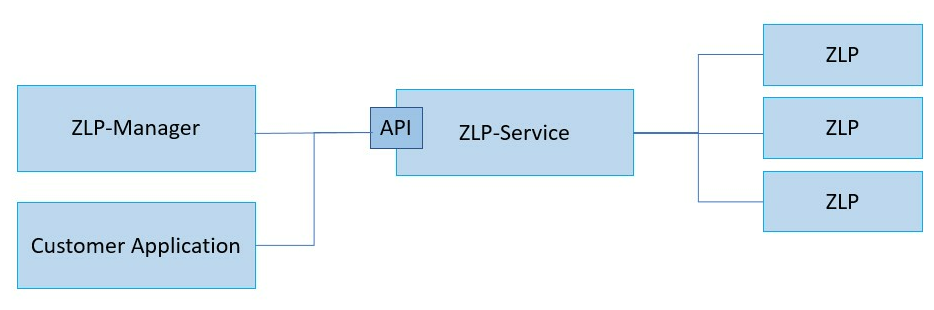
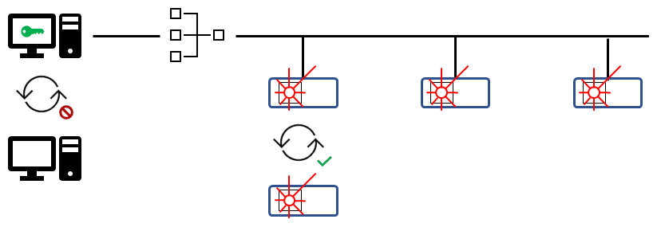
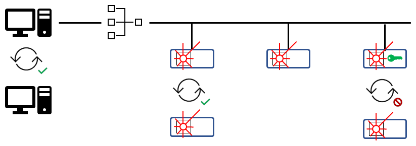
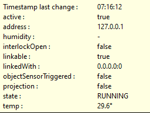
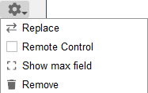

Preface
Dear Customer,
With this user manual we want to help you to operate your ZLP laser projector efficiently, properly and safely together with the associated control software ZLP-Suite, to achieve the best projection results and to achieve a maximum service life of the laser projector. Please read the instructions carefully and familiarize yourself with the software and the laser projector before you use them for your work process.
Ensure that all persons who work with the laser projector and its control software have read and understood these operating instructions before starting any work. To ensure safe working and to prevent injuries and damage to the product, pay particular attention to the safety instructions given.
Always keep the user manual in an easily accessible place at the place of use. For the use of the laser projector, the laws and regulations applicable to the respective country at state, federal, European or international level apply note.
Manual version: 23.2.1
Created on: 15/05/2023
Validity
This user manual applies exclusively to the operation of the ZLP1 and ZLP2 laser projectors from Z-LASER GmbH.
It is available in German and English from:
Z-LASER GmbH
Merzhauser Str. 134
79100 Freiburg
Germany
Tel: +49 761 296 44-44
Fax: +49 761 296 44-55
email: support2D@z-laser.de
or from the respective country representative.
Notes
Please note that all (screen) images used in this manual are for basic understanding and, depending on the operating system and laser projector used, may differ from the windows shown on your screen or from the actual version.
Trademarks
The Z-LASER® logo is a registered trademark of Z-LASER GmbH. Z-LASER® is a registered trademark of Z-LASER GmbH.
Microsoft® and Windows® are registered trademarks of Microsoft® Corporation in the United States and other countries.
Linux® is a trademark of Linus Torvalds, registered in the United States and other countries.
Copyright
This manual, including all of its text and image content, is the exclusive property of Z-LASER GmbH. All rights reserved.
The authorized user has a simple right of use within the scope of the purpose of the contract. Reprinting, duplication, distribution, editing and translation of this documentation or parts thereof is not permitted without the prior written consent of Z-LASER GmbH and is punishable. Likewise, no part of this manual may be made publicly accessible or otherwise made available for interactive retrieval, stored in databases or transmitted without the written consent of Z-LASER. In the event of a copyright infringement, Z-LASER reserves the right to assert all rights.
Limitation of Liability and Disclaimer
This manual has been compiled and published to the best of our knowledge and belief. It contains the latest specifications and product information associated with the current version number. Despite the greatest possible care, no liability can be assumed for the correctness, completeness and topicality. We reserve the right to make changes.
Z-LASER GmbH assumes no liability for personal injury, damage to property, damage to the product or consequential damage caused by non-observance of these instructions and the operating instructions for the laser projector, improper use of the product, repairs, opening of the projector housing and any other actions by non-authors qualified electricians or electricians not certified by Z-LASER on the product or when using non-approved spare parts. It is forbidden to make unauthorized modifications or technical changes to the product.
© Z-LASER GmbH 2022
Safety instructions
Safety instructions are used for occupational safety and accident prevention. They must be observed and complied with. In order not to endanger yourself or others and to ensure safe operation of the laser projector, it is essential to observe the safety instructions in this manual and the safety instructions in the operating instructions for the respective projector.
Make sure that everyone who works on or with the laser projector has been informed about and understands the possible dangers of laser radiation. The software may only be used together with the laser projector as intended. In the event of improper use, all warranty claims will become void. The operator is solely responsible for the resulting risk and possible damage. Always keep the operating instructions for the ZLP Suite and for your laser projector close to the place of use.
Please observe and comply with the relevant accident prevention regulations, occupational health and safety regulations and safety regulations in your country. Information on this must be obtained before the start of work.
Laser safety
You operate a laser projector from Z-LASER GmbH using the ZLP-Suite software. Persons who use laser devices of classes 2 to 4 or who are in the laser areas of laser devices of classes 3B or 4 must have been instructed about the behavior to be observed. The instructions are to be repeated and documented at regular intervals in accordance with the respective accident prevention regulations of the country. Clearly and permanently mark the work area in which the laser projector will project in accordance with your country's laser safety regulations. To avoid dangerous reflections, no mirrors or reflective objects and surfaces may be installed or used in the area of the laser beam. Never look directly into the laser beam or with optical instruments! Close your eyes and turn away immediately if the laser beam hits your eyes or blinds you.
Never remove or damage the protective glass on the exit window of the laser projector. Never open the projector case and never operate the projector with the case open. Make sure which laser class your laser projector is assigned to. The laser class can be found on the type plate on your device. In Regulation 11 of the German Social Accident Insurance (DGUV) you will find further information regarding the safe operation of laser systems in Germany.
For all countries outside of Germany, the relevant regulations regarding laser safety must be observed.
Be sure to observe and follow the safety instructions in the associated manual for the laser projectors ZLP 1 or ZLP 2.
Electronic components
All safety instructions for handling electronic components can be found in the associated manual for the laser projectors ZLP 1 and ZLP 2.
Motion Sensor
For your personal safety, the laser projector ZLP 2 is equipped with a motion sensor. This detects people who are in the danger zone of the laser beam path and automatically switches off the laser beam. Therefore, never cover the motion sensor with paper, band-aids, adhesive tape or similar. For more information, see the ZLP 2 manual.
Emergency switch
The laser projector is also equipped with a key switch for switching the laser beam on and off. Before using the ZLP-Suite laser control software, be sure to familiarize yourself with the safety information for the respective laser projector. Make sure that the laser projector can be switched off at any time. This can be done either on the projector itself via the on/off switch, the key switch or via a specially installed emergency switch. Further information can be found in the manual for the ZLP 1 and ZLP 2.
Administrator rights
In some cases, such as software installation or network settings, you need administrator rights on your computer. Make sure you have the appropriate rights beforehand.
Passwords
Certain applications of the ZLP suite can also be assigned passwords. Always keep passwords in a safe place from unauthorized access.
Overview of the software
The laser projection software ZLP-Suite is a collection of closely coordinated programs and tools. They allow you to set up and manage individual projectors through to interconnected networks. All these options are available via the graphical user interface, the ZLP-Manager, the SDK or via command line tools (Zio, Simulator, and many more) accessible for easy automation.
In the following, these operating instructions describe the individual areas of application and functions of the Suite.
Software structure
The central component of the Suite is the Service. It is middleware that needs to be run as a separate application. The service manages one or more projectors that are connected to each other via a TCP/IP network. He is responsible for the internal administration of projection data, calculates and optimizes the laser projection and guarantees the safe operation of the projectors.

Externally, the Service offers a programming interface (API). All programs in the ZLP suite also access the projectors via this interface. As a customer, you have the option of direct access via the same interface, or you can use an SDK in Python or C-Sharp that we have specially prepared for easier application.
Direct access to a projector bypassing the Service is not possible for security reasons.
Projector Connectivity
The ZLP projectors can be configured with static or dynamic IP address.
The factory default configuration is DHCP and a fallback IP. From firmware
version 1.10 onward (May 2023) the fallback IP is 169.254.10.10 or any other
in the Local-Link range. Previous versions used the fallback static IP
192.168.10.10.
We recommend using the sonic tool to manage the projector network configuration and check the firmware version number. Support for firmware v1.10 was added to Sonic v1.1.0.
Firmware version 1.10 onward
Released on May 2023
Due to the removal of the default static IP from the factory configuration, the projector is only reachable via a DHCP allocated IP or a fallback Local-Link IP.
If no DHCP server is found, the projector will use the standard Local-Link
network range 169.254.x.y and mask 255.255.0.0. If the IP 169.254.10.10 is
available, it will be used first. Otherwise, a random IP in Local-Link network
range is used.
The default hostname of the projector is zlp-<serial number>. e.g.
zlp-1700001985. If your network configuration with DHCP supports Dynamic
DNS updates, you can find the IP assigned to the projector by issuing a ping to
the hostname e.g. ping zlp-1700001985 or zlp-1700001985.local.
Network link up or down triggers an interface configuration. Whenever the network cable is plugged the network interface configuration is applied. If DHCP is enabled the DHCP client starts, and a request is initiated. If the link is lost (cable disconnection), there is a 10 seconds timeout before de-configuring the network interface.
Wait at least 10 seconds before switching the projector from one network to another, e.g from PC to Router.
One-to-One Connection
Most modern operating systems will use a Local-Link IP if a network interface is configured to use DHCP and there is no response from the server. This allows devices to be connected one-to-one without the need of an additional DHCP server. This feature is also known as Automatic Private IP Addressing (APIPA).
Is possible to connect a ZLP projector with DHCP enabled to a computer directly.
And reach it via the IP 169.254.10.10 without additional network
configuration.
The allocation of the Local-Link address happens after a DHCP request timeout. This means that the IP is available between 10 to 30 seconds after connecting the projector to the network.
Firmware version 1.9 and older
The factory configuration is DHCP with a fixed fallback IP 192.168.10.10 and
default hostname zlaser-zlp. The fallback IP is assigned if there is no
response from a DHCP server. If multiple projectors with this configuration are
connected to the same network without DHCP there might be an IP collision.
One-to-One Connection
It is necessary to configure the PC network interface with an IP in the range
192.168.10.x with netmask 255.255.255.0.
Licensing
A valid license is required to be able to use the manager and many other components of the ZLP-Suite. Licensing takes place exclusively through the company Z-Laser GmbH.
The following sections describe the licensing model and the necessary steps to create a registration file and to load a license.
Licensing model
The ZLP-Suite offers two models for licensing the software.
With a system license, the validity of a license is linked to the PC on which the program "ZLP-Service" is running.
The advantage of this license model is that projectors can be exchanged and replaced at any time without the license to become invalid.

In contrast, the projector license is a floating license. The validity of the license is linked to a (master) projector in the system. The overall system with all registered components is only fully operational when
- the license is loaded and
- the master projector is connected to the system.

Registration process
The registration process is started through the license dialog of ZLP-Manager. The dialog can be opened be clicking on the license status button or via the menu entry Help → Registration....
The following information has to be entered in the "Registration" tab:
- type of license,
- contact information of the customer,
- list of modules to be licensed.
Afterwards a registration file is generated from the given information which has to be sent to support2d@z-laser.de. It is used to generate the final license file which then can be loaded with the license dialog.
Load license
A license file can be loaded in the "License" tab of ZLP-Manager's license dialog. The dialog also displays all information comprised in the license and its validity state.
License files are cryptographically protected against changes. Changing a license file is recognized automatically and the changed license is rejected.
On import, the license file is copied into the runtime files directory of the ZLP-Service. The filename is also saved in the configuration file of the ZLP-Service. Hence, the license can be automatically loaded on the next program start.
Program directories
The program paths correspond to the current guidelines where files are stored in the system under Windows and Linux.
A distinction is made here between configuration files and runtime files, which are loaded or saved by the programs.
With a backup these files can be saved if necessary and loaded on another system.
Configuration files
The ZLP-Suite has several programs each with its own configuration file.
The configuration files are stored in the user directory:
| Operating system | Path |
|---|---|
| Linux | $HOME/.z-laser/zlp-suite-xx.x/<FILE>.toml |
| Windows | %USERPROFILE%\.z-laser\ZLP-Suite xx.x\<FILE>.toml |
The format corresponds to Tom's Obvious Minimal Language and is similar to the .ini format known under Windows. The options are intended for customization by the end user. Missing options or incorrect information lead directly to the application in question refusing to run, with a reference to the cause of the error.
Depending on the application, it is possible to specify an alternative configuration. This is documented in the program help when the program in question is started with the --help parameter.
Most options are directly documented via comments in the configuration file.
Below are listed all programs which have a configuration file:
Runtime files
The ZLP-Suite has several programs that generate files at runtime.
The runtime files are stored in the user directory:
| Operating system | Path |
|---|---|
| Linux | $HOME/.z-laser/zlp-suite-xx.x/var/<FILE>x |
| Windows | %USERPROFILE%\AppData\Local\Z-LASER\ZLP-Suite xx.x\<FILE>x |
Each program stores different files, depending on which data is relevant.
These includes:
- Log files
log/*.log - License files
*.lic - user management files
*.dat - Files for saving the program state
*.toml, *.xml, *.info - Cache files for runtime information
*.txt
User interface
The ZLP Manager is the central user interface for the end user.
Here you can load, visualize, manipulate, move your projection data, set up and control your projection system, and much more.

Usage
The default installation directory of the suite is C:\Z-LASER. For example, version 22.2 can be found under: C:\Z-LASER\ZLP-Suite 22.2.
In this directory, the most important programs of the suite are linked to the bin directory as Windows shortcuts.
The manager absolutely needs a network connection to the Service. If the service is not available at the specified network address, the manager starts an instance of the Service itself.
The startup behavior of the manager can be configured using the following command line parameters:
-
-h,--helpShow help text
-
-p PORT,--port PORTPort number to connect to the Service
-
--ip IP_ADDRESSIPv4 address to connect to the Service
Example
Default values for the invocation are as follows:
ZLP manager --port 9090 --ip 127.0.0.1
Structure
The manager can be divided into the areas described below:

The main elements of the user interface are:
-
Title Bar
On the left is the name of the application. In square brackets,
[PORT: 9090, IP:localhost]shows the hostname and port number of the IPv4 address on which the manager connects to the Service. -
Menu Bar
-
Toolbar
The toolbar consists of a list of buttons for direct selection of the most important functions.
-
Left Dock Area with "Tree View"
Dock widgets can be attached to this marked, rectangular area. In the present case, the "Tree View" dock widget is pinned here. Such widgets can be removed from the title bar by drag & drop with the left mouse button and reattached to another location in the application. Alternatively, these dock widgets can also be used freestanding.
-
Status Line
This line is used to output short information on the current processing step. The content depends on the last action performed.
-
Drawing Area
The drawing area is the central element of the ZLP Manager. It is closely related to the tree view. Within the central drawing area, all polylines are displayed in a coordinate system.
-
Status Indicators
The status line uses signal colors to show the status of the connection to projectors, the Service and the license. This area is permanently visible at the bottom right of the user interface.
-
Right Dock Area
Dock widgets can be attached to this marked, rectangular area. In the present case, the "Element properties" and the "Projection editor" are attached here, which can be seen on the tabs at the bottom. Such widgets can be removed from the title bar by drag & drop with the left mouse button and reattached to another location in the application. Alternatively, these dock widgets can also be used freestanding.
-
Tab List
With the help of the green plus sign it is possible to create several tabs. A separate toolbar with various buttons and functions can be created for each tab.
Toolbar
By default, a selection of important functions can be executed directly via a button on the toolbar.
{kind=link}
Additional tabs can be added using the green (+) button on the upper right edge to switch between different toolbars.
The buttons themselves can be configured via a context menu on the button. The position of the buttons can be moved, copied or deleted. A dialog window opens via the "Settings" menu item:
Here you can make settings for the title and tooltip as well as the pixel-precise positioning and the internal format template. The following actions can be configured via the "Type" of the connection:
| Connection | Function |
|---|---|
Connect_3DSetup | Opens the projector setup dialog |
Connect_ActivateMultiColor | Enables multicolor |
Connect_ActivatePen | Set active color of polyline: 0 = white, 1 = green, 2 = red, 3 = blue, 4 = yellow |
Connect_ChangeLanguage | Opens the language settings dialog |
Connect_ChangeProjectorConnection | Entering a projector IP address |
Connect_ChangeServiceConnection | Opens the ZLP service connection dialog |
Connect_CoordinateStartPos | Rotates the canvas view back to its origin |
Connect_CreateDockWidget | Opens the dialog to create a docking window |
Connect_DeactivateMultiColor | Disables multicolor |
Connect_DisconnectProjector | Disconnects the currently connected projector |
Connect_Dock_Projector_IDList | Opens the projector dialog |
Connect_Dock_Projector_ProjectionBorder | Opens the parting planes dialog |
Connect_Dock_Registration | Opens the registration dialog |
Connect_DrawArea_2DView_XY | Rotates the drawing area view to XY view |
Connect_DrawArea_HidePlane | Hides the parting planes in the drawing area coordinate system |
Connect_DrawArea_ShowPlane | Displays the parting planes in the drawing area coordinate system |
Connect_ExportProjectionData | Opens a file browser to export all projection files loaded in the Service |
Connect_Help | Opens the Dock_Help docking window |
Connect_ImportProjectionData | Opens a file browser to import projection data |
Connect_Info | Opens a dialog box showing the current version information |
Connect_LoadGUI | Opens a dialog window to load the manager configuration file |
Connect_LoadScript | Runs the specified manager script |
Connect_OpenBackupDialog | Opens the system backup dialog |
Connect_ReConnectToService | Restarts the connection to the current service |
Connect_RefPoint_ProjectAllTargets | Projects all reference points for all projectors of one or more coordinate systems |
Connect_RefPointSearchAll_Settings | Opens a dialog to activate coordinate systems |
Connect_RefPointSearchAll_ShowResult | Opens a dialog with the results of the last point search |
Connect_ResetConfiguration | Resets the Service configuration |
Connect_SaveGUI | Allows you to save the current manager representation |
Connect_Service_LoadConfig | Loads a service configuration file |
Connect_Service_SaveConfig | Saves a service configuration file |
Connect_SetActiveModeForRC | Sets the remote control mode for a remote control address |
Connect_SetIPRange | Opens the projector search dialog |
Connect_ShowMaximized | Maximizes the ZLP Manager main window |
Connect_StartEXE | Runs an external program |
Connect_StartProjection | Starts the projection of the loaded projection files |
Connect_StartRefPointSearchAll | Starts the reference point search for the selected coordinate system |
Connect_StopProjection | Stops the projection of the loaded projection files |
Connect_ZIO | Opens the ZLP Import Export Tool window |
Tree view
The tree view is itself a dock widget that can be detached and moved from its position via drag & drop on the title bar.
The tree view is a dock widget and lists all loaded projection elements. Like all other dock widgets, it offers two entries via a context menu on the title bar. The manager can be instructed to manually refresh the projection data from the Service via the "Reload view" entry.
The main elements of this dock widget are:
-
Title Bar
A context menu can be opened by right-clicking on the title bar. Several actions can be carried out:
- change settings of dock widget,
- update tree view content.
-
Toggle Mode
This checkbox can be used to activate and deactivate toggle mode in the manager. This is a simple application in which all elements are initially deactivated and the previous or next element can be activated using the buttons (9). A kind of slide show is created.
-
Expand All
By clicking this button, all group elements are expanded in the tree view.
-
Group Element
Drawing elements can be structured hierarchically in groups and optionally shown or hidden.
-
Activate Selection
The checkbox in the "Activate" column marks those group and drawing elements that are to be displayed when the projection is switched on. Activating a group element also activates all contained group and drawing elements.
-
Coordinate System Selection
The default coordinate system can be set with this combo box. This coordinate system is automatically assigned to new projection elements during import. An overview of which coordinate system is currently assigned to a projection element can only be obtained from the expert view.
Outside of expert mode (7), the drawing area only shows drawing elements that are assigned to the selected coordinate system.
Each connected projector automatically defines a coordinate system whose name results from the serial number and the appendix "_FCW". "FCW" stands for "Factory Calibration Wall" and designates a virtual plane orthogonal to the optical axis at a distance of approx. 3.5 m in front of the projector.
-
Expert Mode
This button can be used to activate or deactivate the expert view. In this view, the tree view is expanded to include the known coordinate systems. By selecting one or more coordinate systems and one or more projection elements, an assignment can be made by pressing the
>>button in the middle.All loaded drawing elements are displayed in the drawing area while expert mode is active.
This assignment can be canceled for all elements using the 'Remove all' button.
-
On/Off
The projection can be started or stopped using the 'On' and 'Off' buttons.
-
Back/Forward
The buttons
<<and>>are used in connection with the "toggle mode" (2) to switch to the previous / next element.
Draw area
The drawing area is used for 3D visualization of the loaded drawing elements.
{kind=link}
Elements or areas are marked with the left mouse button, the right mouse button moves the drawing area, while the middle mouse button rotates the area around the origin. The mouse wheel can be used to zoom in or out.
Elements that are marked in the drawing area are automatically selected in the tree view.
Drawing elements that are activated in the tree view are shown in white in the drawing area. All other items appear greyed out.
Two context menus can be active in the drawing area:
Right-clicking in the drawing area while an element is selected opens a smaller context menu:
This allows the selected elements to be edited, copied, deleted, or merged into a single polyline. In contrast, the grouping of drawing elements is reversible.
A larger context menu appears after right-clicking while no drawing element is selected in the drawing area:
Here you can set in the upper third which data should be displayed in the drawing area. In the middle, the drawing area can be oriented in seven different standard configurations. In the lower third, the displayed grid can be adjusted, you can switch between a light and dark view, and you can display the drawing area from the perspective of a projector or a coordinate system.
Status buttons
The three buttons in the lower right area of the GUI are understood as "status buttons":
They show the current connection status of the projectors and the Service as well as whether a license is currently loaded and valid for the current configuration.
Projector status
Clicking on the button opens the Projector dialog. Among other things, it can be used to search for, reconnect or disconnect projectors.
The background of the button takes on three different colors:
- Grey: No projector is connected and no projector has been searched for yet,
- Green: All activated projectors are also connected,
- Red: At least one of the activated projectors is currently no longer connected.
Service status
With a mouse click on the button, the manager tries to establish a connection with the Service again. If a connection cannot be established on the set port address, the manager starts the service on the set port address independently and then connects.
The background of the button takes on three different colors:
- Green: The Service was successfully connected,
- Red: The Service could not be connected,
- Yellow: The Manager is connected to a Service instance, but the version number of the Service does not match that of the manager. This can result in limited functionality and unexpected behavior.
License status
Clicking on the button opens the license dialog.
The background of the button takes on two different colors:
- Green: A license is loaded and it is valid,
- Red: No license has been loaded yet, or the license is invalid. Most Manager functions are not accessible in this state.
The license status can be shown as invalid, even if a valid license file has been loaded. For projector licenses, the license only appears valid once the licensed master projector is connected to the system.
DockWidgets
DockWidgets are windows that can be docked to certain areas of the graphical user interface.
Many of the things that can be adjusted via the manager are grouped by topic and are accessible via DockWidgets. These windows can be added via the View → Create DockWidget... dialog:
Under Type you can choose from the following DockWidgets. The setting under Area defines where the relevant window is initially pinned. The zones (4), (8) and above (5) in the areas of the graphical user interface are available as docking areas.
Dock_Container
The container DockWidget initially appears as an empty area. The Dock_GUIType can be used to create buttons and other graphical elements in this window.
Dock_GUIType
This DockWidget allows creating new buttons and simple graphical elements in the Toolbar (3) or in Dock_Container widgets:
The elements can be pulled out of the DockWidget with drag & drop and placed in the toolbar / Dock_Container. Further configuration is possible by right-clicking with the mouse.
Dock_Height_Offset
With this DockWidget, the loaded projection data can be moved across the board in the height of the Z coordinate.
Dock_ProjectionEditor
The DockWidget Dock_ProjectionEditor is already open in the right docking area (8) when the Manager is started:
The individual buttons in the top line enable various drawing elements to be created in the character area (6). These are from left to right:
- Polyline
- Text
- Circle
- Rectangle
- Crosshair
- Arrow
The elements are placed in the drawing area by clicking with the left mouse button. The size of the element is set directly afterwards via a drag operation with the left mouse button pressed and held.
Then some element properties can be adjusted in the DockWidget.
Dock_Projector_IDList
The Projector Id DockWidget shows the connection status of all known projectors. This widget is the same as what can also be opened via the Projector Status Button (7).
The "Search" button opens the Projector search dialog. New projectors can be added to the system via this dialog.
A line is added to this dialog for each projector found. The individual fields describe:
-
ID: the serial number of the projector,
-
Name: a symbolic name of the projector; if this is missing, the serial number is displayed,
-
IP: the IPv4 network address of the projector,
-
Info: A tooltip above this field lists several projector status information:
 -
Status: This icon takes on four different colors:
- Gray: The projector was found by searching, the "Active" flag is not set and the projector is not connected.
- Yellow: The connection establishment is in progress. A transition from gray → yellow is triggered by setting the "Active" checkbox.
- Red: The "Active" checkbox is set. The projector was connected, but is currently no longer accessible. Possible reasons include: network connection is disrupted, projector is turned off. If there is a chain link within the red icon, the projector is already connected to another Service and is therefore blocked.
- Green: The projector is connected to the current Service and is ready.
-
Active: Activating this checkbox starts the connection between the Service and the projector and binds the projector to the service. Connection to another service instance is no longer possible until the projector has been released again.
-
Actions Menu ()
- Replace: Replace projector with an existing or new one.
- Remote Control: Activating this checkbox activates the infrared receiver for remote control signals on the respective projector.
- Show max field: Starts a projection of the projector maximum field.
- Remove: Removes the projector, there are no changes to projection elements or coordinate systems.
If a projector no longer automatically connects to the Service after a restart, the connection status of all activated projectors can be refreshed using the "Refresh" button.
Dock_Projector_ProjectionBorder
This DockWidget can be used to define so-called projection parting planes. These are primarily intended for use in multi-projector systems.
A parting plane is used to virtually limit the projection area of one or more projectors. A more detailed description can be found in the chapter on Borderlines.
Dock_PropertiesView
The element properties of drawing elements can be displayed or subsequently edited using this DockWidget:
This widget appears empty as long as no element is selected in the drawing area or in the tree view. Depending on the selection, this DockWidget lists the element properties and provides an input option to adjust the parameters.
Dock_WorkflowManager
Workflows can be defined via the work process manager, which can later be played back as instructions with multimedia content. In this way, work instructions can be predefined and linked to laser projections. Once defined, they can also be processed independently by unskilled workers.
A more detailed description of creating and editing workflows can be found in the chapter on the Workflow-Manager.
Language settings
The ZLP Manager user interface opens in English by default the first time.
The language for the manager can be changed via the menu item Settings → Language. There is a choice between:
- German
- English
- Chinese
A change in the setting is applied directly.
Import/Export
The Zio or Zio-GUI component is responsible for loading and saving data. This functionality is possible via the manager in the following ways.
The supported file formats are described in the Data Formats section.
Import/Export projection file
In the toolbar, the first two buttons, "Import projection file" and "Export projection file" open a Windows dialog for opening or saving a file. The manager forwards the file names to Zio. If successful, the projection elements then appear in the tree view.
The action behind both buttons is also accessible via the menu File → Import Projection File or File → Export Projection File.
Expert dialog Zio GUI
A second possibility is behind the menu item File → Import/Export Projection File (Expert). This entry opens the expert dialog Zio-GUI.
Saving data can be done indirectly via Service, see section on Service Configuration.
Backup
A compressed archive of all runtime information can be created via the menu item File → Create backup.... The dialog window automatically suggests a file name based on the current time. The user can optionally leave a comment, but must explicitly specify the storage location:
Saved files include:
- the active license file,
- the manager configuration
zlp-manager_config_9090.xml, - the service configuration
zlp-service_9090.infoand - configuration files (*.toml)
The manager configuration contains settings for visible or deactivated widgets, size and space distribution of the window configuration, etc.
Among other things, the Service configuration saves all connected projectors and all loaded projection elements.
The configuration files of the programs contains default values that are valid throughout the system runtime.
A backup copy created in this way can be restored at a later point in time via the menu item File → Load backup....
Service Configuration
"Importing data" is synonymous to "importing data into the Service application". The data is stored there in a structure called "GeoTree" (geometry tree) for further processing.
The Service is also able to export its current configuration and output it in a proprietary format that has the .info file extension. This function is accessible in the manager via the menu item File → Load ZLP-Service Configuration... or via File → Save ZLP-Service Configuration....
In addition to all projection elements, the active license and the list of connected projectors are also saved.
File Name and Location
By default, the Service configuration name is zlp-service_config_9090.info. The number "9090" corresponds to the port number on which the service listens for incoming connections. When saving, this file is stored in the runtime files directory of the ZLP-Suite.
The Service configuration is not saved via Zio, but directly by the service. The resulting file can therefore only be saved on the computer on which the service is running.
In particular when using a ZLP1 with a PC board, this means that this configuration is stored on the PC board and not on the user PC.
Auto Save
The central configuration file zlp-manager.toml defines the settings for automatically saving the Service configuration via the manager.
These settings can be changed:
- whether auto-save is enabled or not,
- whether the manager should load this file automatically at startup,
- the file name under which the configuration should be saved automatically,
- the auto-save interval.
Manager configuration
The manager has two configuration files: the first one to save the current state (i.e. displayed windows and buttons) and a second one which contains the startup settings. In the following these two configuration files are described in more detail.
View file
The manager saves its current window configuration, which DockWidgets are docked and the general graphical view at:
| Betriebssystem | Pfad |
|---|---|
| Linux | $HOME/.z-laser/zlp-suite-xx.x/var/zlp-manager_config_<PORT>.xml |
| Windows | %USERPROFILE%\AppData\Local\Z-LASER\ZLP-Suite xx.x\zlp-manager_config_<PORT>.xml |
Saving the file is done automatically each time the program is closed.
Here the port number <PORT> of the ZLP service to which the ZLP-Manager is currently connected is set in the file name.
The file is loaded automatically on startup. The name of this file can be changed via the configuration file.
In addition, the Manager configuration can be saved at any time via the menu item File → Save ZLP Manager Configuration... or reloaded via File → Load ZLP Manager Configuration....
Settings file
The manager is the only component in the suite that creates its own settings if no group is present.
The settings of the manager are summarized in the group [ZLP-Manager_<PORT>].
Where <PORT> is the port number the manager used to connect to the Service.
For each connection to another service instance, a new group entry with all available settings is created.
Below is the default configuration file zlp-manager.toml:
[ZLP-Manager_9090]
# Name of the configuration file that the Manager loads on startup, if
# `auto_load_service_config` is `true`. The file must be located in the
# runtime files directory of the Service.
#
# default: "zlp-service_config_9090.info"
service_config = "zlp-service_config_9090.info"
# If enabled, it causes the Manager to automatically load the configuration
# file in `service_config` on startup.
#
# default: true
auto_load_service_config = true
# If enabled, it causes the Manager to automatically save the Service
# configuration under the filename in `service_config`.
#
# default: true
auto_save_service_config = true
# Number of seconds after which the Manager automatically saves the Service
# configuration under the filename in `service_config`.
#
# default: 600
auto_save_interval_service_config = 600
# Name of the configuration file the Manager loads on startup.
#
# default: "zlp-manager_config_9090.xml"
manager_config = "zlp-manager_config_9090.xml"
# Style sheet used by the Manager.
#
# default: ":/qss/standard.qss" (part of source code)
manager_style = ":/qss/standard.qss"
# Remote control addresses (1-15)
#
# default: []
active_rc_addr = []
# Set startup mode (1-4) for remote controls defined in `active_rc_addr`.
# 1: projection mode
# 2: setup mode
# 3: info panel mode
# 4: clipping mode
# Example: active_rc_addr = [1, 2], active_rc_mode = [1, 1]
#
# default: []
active_rc_mode = []
More information about the file format used and the location of all configuration files can be found in the chapter about configuration files.
Projector search dialog
The manager has a simple dialog to search for projectors on the network. The projector search dialog is accessible via the Search... button in the projector dialog:
Depending on the selected radio button, the search is either on
localhost(127.0.0.1),- a selected IPv4 address,
- a network area with up to 255 computers
carried out. A search in larger areas does not make sense, since the time required for the search would otherwise take too long for practical applications.
If the search is successful, the projectors found appear immediately in the Projector dialog.
Replace projector
It is possible to replace an existing projector with another already connected or a new one. Accessing the Replace projector dialog is possible via two paths:
- Projector → Replace projector → PROJECTOR_ID
- From the action menu in the projector dialog:
Select an already found projector from the drop down or write the new projector serial number. All settings such as coordinate systems, projection settings and projection elements are moved to the new projector.
Make sure you have safely backed-up the Service configuration before removing or replacing a projector.
3D Setup
Immediately after you have loaded data and connected the ZLP suite to a projector, you can start projecting this data. If you are only interested in projecting geometric figures into space and possibly adapting their projection data to the projection surface, you can use the FCW Coordinate system and skip the rest of the setup.
As a rule, the projection data are constructed true to scale in a CAD program and the projector should project them true to scale onto a surface. The system needs to know where the projector is in relation to the projection surface. The "3D setup" calculates this correspondence using reflectors that have been attached to known locations and can be measured by the projector:
Using at least four reference points (here: T1, T2, T3 and T4), the coordinate system with the axes X,Y,Z can be determined and the projection can be projected true to scale.
The following chapters describe the setup via the 3D Setup application:

- First a new coordinate system is created. This can be done in two ways:
- creating an empty coordinate system : coordinate system name can be chosen freely. 4 reference points (T1-T4 with coordinates x=y=z=0) are automatically assigned. Coordinates have to be edited first.
- loading a
*.reffile : the coordinate system name corresponds to the file name. The reference points are loaded from the file.
- Assign the reference point to the available projectors on the right. Minimum 4 reference points a required per projector.
- After that, switch to the 'Setup-Tab' to align the reference points to the construction coordinates.
- If reflector points are available, the point search can be started optionally. It refines the angular deflection (\(u,v\)) to the given \((x,y,z)\) position of the reflectors.
- With this information, a transformation can be calculated that describes the projector relative to the projection surface.
FCW Coordinate system
FCW1 is a virtual projection plane measured in the laboratory for test purposes, which is about 3.5 m away2 in the negative Z-direction from the projector:
Every projector is automatically equipped with such a coordinate system. To quickly project data, it is sufficient to switch to expert mode in the tree view and assign the corresponding coordinate system to the projection data under the name <projector serial number>_FCW,
FCW is an abbreviation for Factory Calibration Wall.
The exact distance is measured during calibration in the lab and is available to the user from the point search Settings dialog box. See chapter Structure of the 3D Setup widget.
3D-Setup
The 3D-Setup application is a stand-alone client application that can directly communicate with the ZLP-Service. With this tool, you can create coordinate systems and assign projectors and reference points, calculate drift compensation and use tweaking.
Start 3D-Setup
The 3D-Setup application can be started over the ZLP-Manager


A user settings file is automatically loaded on startup. The file contains the last window size and position, whether tweaking was activated and which view settings were set the last time. The file will be saved automatically after closing the 3D-Setup.
Save and load the current configuration
There is a possibility to save and load all coordinate system and drift compensation objects in a *.toml file.
Save
On save, all created coordinate systems and drift compensation objects are saved.
- Open the menu at "File" and press "Save configuration..."
- Enter a file name and press "Save"
- A *.toml file will be created. The file can be edited.
Load
On load, all coordinate systems and drift compensation objects will be removed from the Service and replaced by the contents of the file. If you don't want to lose the current configuration, first perform the steps under Save.
- Open the menu at "File" and press "Load configuration..."
- Navigate to the desired *.toml file and press "Load"
- The complete data will be loaded from the file and the view will update automatically
Overview Tab
The 3D-Setup application starts up with the overview tab.
In the overview tab, the coordinate systems are created and assigned to the projectors and reference points.
Create a coordinate system
On the left spin box area, a list of available coordinate systems is displayed. Coordinate systems can be created in two ways:
- Press the [+] button. The coordinate system name can be set freely and 4 reference points (T1-4, x=y=z= 0) are automatically created.
- Press the [Load] button to load a *.ref file. This will create a coordinate system with the same name as the ref file and load the included reference points.
Edit coordinate system
To edit the coordinate system, select the coordinate system and open the context menu (right-click on selected elements)
Assign projector and reference points to coordinate system
On the right spin box area all connected projectors and the loaded or created reference points are displayed. To add a projector to the coordinate system, select the projector with the mouse, open the context menu and press "Add". To assign the reference points to the projector, select the reference points in the table, open the context menu and press "Add to {ProjectorSerialNumber}" The assigned elements will be displayed as children of the projector in the middle.
Edit reference points
The points can be edited in the table "Reference point". To edit the values you have the following options:
- add: press the [+] button, and a new reference point with the name "T{index}" will be added
- remove: select reference point(s) and press the [-] button
- edit: double-click on the cell you want to edit and enter a new value
- replace all: press the "Load reference point" button and load another *.ref file
Remove projectors
Projectors can only be removed, if they are no longer connected to the Service, that means deactivated. Otherwise the projector would be reappear in the list after removal. To remove a projector, select the desired one, open the context menu and press "Delete".
Setup Tab
In the setup tab, the reference points of each projector will be assigned to the target reference points and a setup matrix will be calculated

Set up a coordinate system
To set up a coordinate system do the following steps:
- Select one coordinate system from the combo box
- Select one projector you want to set up and press the left arrow to display the assigned reference points
- Project the max field and the center cross of the projector to assign the projector to the target. The target has to be inside the borders of the max field and for a more accurate setup assign the center cross to center of the target
- Select one reference point in the list. The projector starts the projection of the following element [+] (shows a center cross and search area square)
- Move the element to the corresponding reference point on the target. Press and hold the left mouse cursor for normal speed or the right mouse cursor for slow speed. ...
- Assign each element on the target and start a point search if reflector points are available
- Press calculate and confirm the dialog if the deviations are ok
- The projector is set up. This is visualized by an M-Symbol next to the projector
- Redo steps 1-8 for the other projectors in the list
Tweaking
Tweaking is used to fix an inaccurate projection if the corresponding reference points on the target system, do not fit exactly. For every reference point, a tweak offset can be set.
To set the tweak offset do the following steps:
- Select the coordinate system whit the inaccuracy
- Select one projector
- Open the settings dialog
- Activate the checkbox "Activate tweaking" -> in the ToolBar a new dialog appears (Note: On default, the transformation will be updated automatically if the tweak offset will be changed. Furthermore, if the utility projection (control field) is activated for validation, the projection will be automatically reloaded. To deactivate this automatism uncheck the checkbox "Auto calc. + projection". In this case, the calculation of the transformation has to be triggered manually)
- Select one or multiple trace points and set the tweak offset
- Check the projection to prove if the inaccuracy is compensated
- Repeat steps 3-4 until the projection is fine
- To reset the tweak offset, select the desired trace points and press "Reset"
Drift compensation Tab
In the drift compensation tab, a drift compensation matrix will be calculated to compensate for a projector drift. A drift is recognizable by an inaccurate projection that occurs after a while of use in the production environment

Initialize compensation
The compensation will be set for each projector and will be applied to all assigned coordinate systems. To initialize the drift compensation do the following steps:
- Select a projector
- Activate the drift compensation by checking the checkbox "Activate"
- Select a coordinate system to define in which coordinate system the drift compensation points are located. This can only be determined approximately, there are no real coordinates for the drift compensation points. If the dc points are more or less parallel or otherwise related to the coordinate system use the custom plane option.
- Create minimum of 4 drift compensation points by pressing the button [+]
- Select one of the drift compensation points in the list. The projector starts the projection of the following element [+] (shows a center cross and search area rectangle)
- Move the element to the corresponding drift compensation point on the target. Press and hold the left mouse cursor for normal speed or the right mouse cursor for slow speed. ...
- Assign each element on the target and start a point search if reflector points are available
- Press "Initialize" to set up the projector this is now the initial position from this the displacement can be determined. The drift compensation matrix will only be calculated when the user realises, that the projection is getting inaccuracy. Then go on with step Calculate drift compensation matrix
- The projector is initialized
Calculate drift compensation matrix
If a drift is recognized do the following steps:
- Open the 3D-Setup
- Navigate to the "Drift compensation" Tab
- Select the projector that has drifted and press "Search all"
- If minimum 4 points are found press "Calcuate" to calculate the drift (NOTE: Do not press Initialize otherwise the start values and the transformation matrix will be reset)
- The successfully calculated drift compensation is visualized by an M-Symbol in front of the projector name inside the combo box
Settings dialog
The settings dialog offers the possibility to set the global search parameters and the Setup tab contains also the option "Activate tweaking".

Toolbar
The toolbar, found on the right side of the 3D-Setup, allows the final setup of a projector as well as an optional drift compensation. In addition, auxiliary projections can be executed and the view settings can be set.
| Toolbar (Setup) | Toolbar (Drift compensation) |
|---|---|
 |  |
Auxiliary Projections
Both toolbars allow the auxiliary projections "[ ] Max field" and "[+] Center cross". The projection "Control field" is reserved for setup only.
Search and Calculate
Both toolbars offer the ability to search for individual or all points, center a point, and calculate a transformation. You can also use "Settings" to open the settings dialog briefly described above.
View
Both toolbars offer the ability to change the orientation (s, x, y), the step width and the speed of the mouse movement.
Tweak offset
If Tweaking is enabled in the settings dialog of the Setup tab, offset values (dx, dy) can be set and undone for each point in the toolbar.
Number of reference points
The number of reference points that must be at least present in order to perform a calculation can be set in the setup toolbar. There must be at least four reference points.
Initialize and calculate drift compensation
After the drift equalization has been set up, it still needs to be initialized. If a drift of the projector is noticed later, all points should be searched and recalculated. An initialization should not be done!
Projection border
A parting plane is used to virtually limit the projection area of one or more projectors. Editing of parting planes is possible via the DockWidget Dock_projector_ProjectionBorder.
Projectors that are integrated together in a system often overlap in their projection area. To ensure that the data is not projected from both projectors at the same time or incorrectly, a dividing plane can be created that determines how large the overlapping area is and which areas are to be projected by which projector.
It should be noted here that the parting plane from the perspective of the projector will display the data either on the side facing or on the side facing away from the projector.
This can be achieved that flickering is reduced or shading can be avoided.
The "Edit" button opens the dialog for creating and editing parting planes:
In the upper area, the parting plane can be parameterized using an offset and its normal vector.
In the lower area, it can also be shifted in the direction of its normal vector to simplify interactive editing.
Projection Settings
For every new projector which is connected to the projection system, the optimal projection parameters for its type are loaded automatically. The default values ensure a good projection quality for most of the use cases. Hence, only in rare situation it should be necessary to change them.
The user can access the projection settings dialog through the menu bar: Projection → Projection settings...:

Global parameters
The global parameters apply to all projectors in the same way. The values in millimeters and degrees refer to the factory calibration wall. The projection data is mapped on this plane in order to calculate the projection path (path planning). Here various preprocessing steps are executed which can be controlled by the global projection parameters.
Maximum approximation distance
At the beginning of path planning the projection data is simplified by removing obsolete points and short lines. The larger the set distance, the shorter is the computation time and the higher is the projection frequency. At the same time the actual projection differs more and more from the original data.
Advanced path optimization
Whenever this option is active a geometric path optimization is performed which comprises the following steps:
- Adjust the order of contours
- Adjust the direction of contours
- Remove overlapping contours
The optimization increases the projection frequency at the cost of an higher computation time.
Collinear edge fusion
This is an optional step of the advanced path optimization in which overlapping contours are merged. This time-consuming procedure is off by default since most projections do not have overlapping contours.
Corner detection angle
This parameter controls which points in the projection are treated as corners. The galvanometers reduce their speed to zero at every corner and the laser is turned off for a short moment. This approach increases the projection quality at these positions and is important for laser safety.
The corner detection angle comes from the change of direction of the projection path at a certain point. A large value leads to a high projection frequency but rounded off corners.
Maximum sampling deviation
The final projection path comes from calculating galvanometer positions along the contours of projection (sampling). Normally the sampling points do not coincident with the intermediate points of a contour. Hence, there is always a difference between the projection data and the projection path.
The maximum allowed difference can be set with the parameter. A large value leads to a high projection frequency but low accuracy. A small value gives the opposite results. In order to comply with the given limit, some sections might need to be projected at a lower speed and do appear brighter.
Projector parameters
The following parameters can be set individually for each projector. This is useful in situations when projectors of varying types are used in a joint setup.
If many projectors of the same type are used in a multi-projectors system, the Sync option should be activated to apply all parameter changes to all projectors at the same time.
Tick time
This value defines the time gap between consecutive galvanometer positions. As a consequence it also controls how often the original contours are sampled during path planing. A low value leads to a more accurate and faster projection. However, more computation time is needed and the amount of data to transmit increases.
When the tick time is changed the synchronization delay might need to be adjusted as well because the actual delay period depends on the tick time.
Maximum laser on speed
This parameter affects the maximum speed of the galvanometers with activated laser. The given value is usually reached only at very long, straight contours. A low value increases the projection brightness but reduces the projection frequency at the same time.
Maximum laser off speed
This parameter defines the maximum speed of the galvanometers when the laser is inactive. The value should be set as high as possible, since this increases the projection frequency without much of a negative impact on projection.
Maximum acceleration
At contour ends and corners the speed of the galvanometers is reduced to zero. The set value defines how quick the galvanometers can speed up again afterwards. A higher acceleration value results in a higher projection frequency but may also cause lower accuracy.
Synchronization delay
In order to improve the projection at contour ends and corners, the synchronization of galvanometer position and laser modulation can be increased. This is done by adding a delay whenever the laser modulation changes. At the beginning of a contour (off → on) the galvanometers wait with an inactive laser. At the end of a contour (on → off) they wait with an active laser.
The synchronization delay should be set as low as possible to obtain a high projection frequency and a uniform brightness.
Multicolor
This parameter activates the usage of multiple laser sources for projectors which have this hardware feature. Most of the projectors have only a single laser source (green or red).
Hints
It is not always easy to adjust the projection setting in the right way. For this reason parameter changes should always be evaluated live with a real projector and a typical projection. It might also be useful to send the projection to the projector simulator at the same time. In its Projection tab all effects on the projection path can be studied in detail. The following sections describe some typical projection problems and possible solutions.
Flickering
The projection starts to flicker if the projector has to display to many contours simultaneously or if it is projecting to slowly. In such a situation the user should at first check if the number of contours can be reduced by deactivating the projection elements which are currently not needed.
Furthermore the advanced path optimization should be active. If a lower projection accuracy is also an option, the following steps can also help:
- Reduce the synchronization delay
- Increase the maximum sampling deviation
- Increase the corner detection angle
- Increase the maximum approximation distance
- Increase the maximum acceleration
- Increase the maximum laser on speed
Low accuracy
Whenever the projection differs to much from the desired position, the following countermeasures can be taken:
- Reduce the maximum approximation distance
- Reduce the maximum sampling deviation
- Reduce the corner detection angle
- Reduce the maximum acceleration
- Reduce the time time
Low brightness
If only long contours appear to dark, the maximum laser on speed can be reduced to work against it. If the complete projection should be brighter, the projection frequency needs to be increased (see flickering).
Gaps
Whenever there are gaps in the projection, the set values for speed and acceleration do not match the characteristics of the galvanometers in the projector. Lower values usually close the gaps in the projection. Alternatively the synchronization delay can be increased.
Tails
Small tails can appear at contour ends if the galvanometers and the laser modulation are not well synchronized. A higher synchronization delay solves this issue.
Noise
If the galvanometers are operated at a high speed, noise can be noticeable during projection. This is not a problem in most cases. The parameter limits are chosen in such way that the projector can not be damaged.
User Management
By configuring the user management it is possible to assign individual users varying permissions to restrict access to functionality of the Manager. When the Manager is first started the user management is deactivated by default. Once the user management has been enabled in the "Settings" tab the Manager requires a login on startup.
The user management can be started through the menu entry Settings → Open user manager:
There are three tabs available. The tab "User Accounts" lists all accounts. They can be created, edited and removed again from this tab.
Manage user permissions
When a new user is created, it must be assigned to a specific group. All actions that a user can perform are tied to this group name. The tab "User Rights" can be used to create, remove and configure the individual permissions:
By default two groups are predefined. Users belonging to the group Admin may perform any action by default. Users who belong to the group User have their permissions pre-configured to disallow all actions.
The name of most of the permissions is self-explanatory. The following settings warrant an additional description:
-
Edit projection data
Allow the user to remove projection elements from the tree view and assign new coordinate systems to them.
-
Edit ZLP-Manager
Allow the user to make changes to the user interface of the Manager.This includes creating, removing and editing buttons in the toolbar as well as modifying and placing DockWidgets.
-
Open user manager
Warning: By providing access to the User Management it is possible to enable or disable the access control.
Settings
Besides the configuration of users and groups the last tab lists some general settings that can be adjusted:
Changes to the user management only become active once the CheckBox "Activate user manager" has been ticked. Afterwards the Manager must be restarted for the changes to take effect.
Workflow manager
The workflow manager can be used to generate various workflows. In a workflow, work steps are specified in order to ensure consistent work quality or to facilitate familiarization at a workplace. Projection data, a description and an image that depict the work process can be assigned to each work step. Each completed work step is recorded in terms of time and saved in a log file.
As soon as a workflow is started, the ZLP Manager displays the assigned data for each step in the central window. This means that all relevant information is in one central location and does not have to be additionally available, in for example printed form. All workflow data is stored in a folder in the installation directory and can therefore be easily transferred to other ZLP-Suite systems.
Structure and data storage
The workflow manager contains a list of all available workflows. Each workflow has a name, a description and any number of steps. If a workflow is selected, the overview shows the name and a description that can be edited there. In addition, the selected workflow can be started, edited, copied and deleted.

The data is stored in a separate folder (folder name = name of the workflow) located in the runtime files directory under workflows/<name of the workflow>.
This folder contains a configuration file workflow.xml that contains the steps of the workflow. Various data (projection, description and image data) can be assigned to each step, which are copied directly into the workflow folder.
In addition, after starting the workflow, a time recording file is created in the log folder under workflows/<name of the workflow>/log.
The start time for each step and the total time required for processing are recorded there.
Open Workflow Manager
The Workflow Manager can be integrated into the ZLP-Manager as a dock widget.
To do this, click on "View/Create DockWidget.." in the menu bar and select the type Dock_WorkflowManager there.
The Workflow Manager becomes pinned as a DockWidget. When exiting the ZLP Manager, the position in the configuration is saved and is available again after a restart.
Create workflow
The workflows created are displayed in an overview view. Each newly created workflow contains an automatically generated name (workflow{index}) that can be edited and a description that is initially empty.
- Press the button
"Create new workflow" - Change the name and provide a description
- Press
"Edit Workflow"and follow the instructions and under Edit Workflow
Edit workflow
To enter edit mode (editor mode), select a workflow and press "Edit Workflow".

Steps can be created, deleted and copied there. The workflow can also be played back there to test the process (player mode).

- Workflow opens in editor mode
- Press
"Add new step"to create a new step. The name of the step is generated automatically. Double-click on the step to edit it. - Press the three buttons in the middle :
- Projection File : Loads the projection file for a selected coordinate system. Only possible when a projector is connected.
- Description (optional) : Load an HTML page or enter a descriptive text directly
- Image (optional) : Load an image in PNG or JPEG format
- Add more work steps and do the previous step again
- To play through the workflow, press
"Start Workflow"(optional) - Quit editor mode
Copy workflow
Copied workflows contain all data from the original workflow (projection, description and image data), only the name of the workflow is changed automatically.
- Select the workflow
- Click on copy workflow
- An entry with the name of the workflow + _copy is created and the workflow folder is created in the runtime files directory under
workflows

Delete workflow
Only one workflow can be deleted at a time
- Select a workflow
- Press the button
"Remove selected workflow" - The entry and the associated folder in the workflows directory will be deleted
- The subsequent workflow is selected automatically
In order to remove all workflows at once, the workflows folder can also be deleted directly. However, either the ZLP manager must then be restarted or the workflow manager must be updated again via the context menu "Reload view".
Start workflow
When starting a workflow, the run mode (player mode) is started. All data of the steps are loaded automatically.
- Select a workflow
- Press
"Start workflow" - Provide the name of the person performing the workflow
- Workflow opens in Player mode
- Projection data, description and images are loaded for each step

- The projection data is added in a group corresponding to the workflow name

- Now press either the arrow keys (right, left on the keyboard or in the dialog) to switch between the steps
- Each step is timed and stored in a log file
- After the last step, a message appears to exit or restart the workflow
- When the workflow ends, all projection elements within the workflow's group are removed
Save workflow
Each workflow can be backed up. This backup can be loaded on another system via another ZLP manager. All projection files, the texts and the images are backed up. However, the coordinate systems that have been set up are not saved here. It is therefore necessary to save the ZLP service configuration file as well. By default, the configuration file is selected when creating the backup.

- Open the backup dialog via the menu bar "File/Create backup..."
- Select the workflows to be backed up
- Choose a backup location
- Press
"Export" - A backup file with the extension *.zpro is created
Time workflow
As soon as a workflow is started, a log file is automatically created with the current date in the workflow in the directory workflows/<name of workflow>/log.
This includes the start time of the workflow and the name of the person who is carrying out the workflow.
The name of the step and the start time are recorded for each step.
If the workflow ends, the end time is recorded.
Overview
In order to communicate with a laser projector, each client application (e.g. the manager) has to connect to the middleware, the "Service". This middleware software is delivered in the form of a command line application.
The connection is made via TCP/IP. The Service listens for incoming connections on all known network interfaces. Communication is through a single port, numbered 9090 by default. The number of simultaneous client connections is unlimited.
Usage
Typically, the manager serves as the entry point into using the ZLP suite. The Service is started automatically when the manager is started, so that no further action is required by the user with regard to the service.
On Windows, there is a shortcut called "Service" in the ZLP suite installation directory. This starts the application behind the file .../bin/ZLP-Service.exe.
Using the --help option, the application displays the available parameters:
-
-c FILENAME.INFO,--config FILENAME.INFOThe Service always starts in a not configured state. Settings must be made via the API. This makes it possible to save the current status again. By default, these files have the file extension
.infoand can be passed to this option to restore the saved runtime configuration at launch time. -
-h,--helpShow help text
-
-v,--verboseWith this option, extended debug information is also output to the console. It shows the time required to calculate and transmit the projection data to the projector.
-
-p PORT,--port PORTPort number to wait for an incoming connection on. This number should be greater than 1024. Smaller values are often reserved for system services and require administrator rights.
-
-t COUNT,--threads COUNTDefines the number of threads the Service uses to process requests from other applications. A larger number improves response times at the expense of throughput. For real-time applications, we recommend choosing smaller values and reducing the number of parallel accesses.
-
-l DIRECTORY,--log-dir DIRECTORYBy default, log files are stored in the runtime files directory. This option allows you to change this target directory. The specified directory must already exist.
After starting, the application can be terminated by pressing Ctrl-C or by closing the console window. All open connections with client applications and projectors are closed. All ongoing projections are terminated shortly thereafter by the projectors.
API
All applications that are part of the ZLP suite communicate with the Service via a single API, which you as a customer can access free of charge. You can use it to redesign all operations that are available from Z-Laser, some free, some for a fee, and thus integrate ZLP laser projectors into your own applications.
Apache Thrift
In order to make the control of the projectors as independent as possible from the programming language used, ours is based on the Apache Thrift Framework.
Apache Thrift provides a free compiler that generates target languages from a source file containing function descriptions, wrapper functions, and classes for many.
The communication between the application and the Service works via a TCP/IP socket and is therefore network-transparent.
An overview of the available functions can be found in the SDK documentation in the installation directory of the ZLP suite at
.../documentation/sdk/thrift-interface:
Examples
Further examples and documentation for the following languages can be found in the installation directory of the ZLP suite under documentation/sdk:
Overview
The program z-io is the import/export interface of the ZLP suite. Its task is to read in file formats and transfer them to the Service, as well as to read out data from the service and save it in a file.
z-io is a command line program that communicates with the Service via the same
API as all other applications. Internally, Zio uses a plugin
interface and each supported file format is stored as a DLL in the
.../bin/io_plugins directory.
Data import/export can be done in two ways. Either as a call via the command line program z-io or the graphical application z-io-gui.
Data is stored in the Service in a structure called a "GeoTree". The individual elements in the GeoTree are uniquely identified by their name and group name.
Calling z-io
Using the --help option, the application displays the available parameters.
The following list explains some of the most important ones:
-
--ip ADDRESSIP address to connect to the Service. If this option is not specified,
localhostis used as the default. -
--port NUMBERPort number under which the Service can be reached. If this option is not specified,
9090is used as the default. -
--import FILEInput file for reading in data. At least one of the options
--import,--exportor--clearmust be specified.-
--scale xBy specifying this option, the data can be scaled by a factor \(x > 0.0\) during import.
-
--shift dx dy dzBy specifying this option, an offset can be applied to all imported data.
-
--coordinate-system NAMEBy specifying this option during import, the imported data is automatically assigned the coordinate system
NAME. -
--group NAMEBy specifying this option when importing, all imported data will automatically be placed under a group named
NAME. -
--replaceWhen loading data, a naming conflict can occur if data is already stored under the same name. In this case, Zio automatically adds an extension to the name of the newer data.
Specifying this option resolves these conflicts by allowing the newly imported data to overwrite the existing ones.
-
--projectThis option tells Zio to start projecting all data in the configured coordinate systems after import.
-
-
--export FILEOutput file to save data. At least one of the options
--import,--exportor--clearmust be specified. -
--clearRemoves all projection elements in the GeoTree. At least one of the options
--import,--exportor--clearmust be specified.
Configuration file
The default behavior of z-io can be influenced by setting certain parameters.
These parameters and their default values can be viewed by calling
z-io --dump-settings. This command can also be used to create a configuration
file and use it in subsequent calls:
z-io --dump-settings > z-io-config.toml
# edit z-io-config.toml
z-io --config z-io-config.toml [--import ... | --export ...]
It is also possible to create a default configuration file by using the option
--save-settings. This call creates a configuration file in the directory
.z-laser in the home directory of the current user. If the file is present,
it is automatically loaded by every call of z-io which does not use the
--config option explicitly.
Evaluation order
The program z-io can receive parameters in multiple different ways. By doing so some options can overwrite others. The order of evaluation is as follows:
-
Parameters in configuration file
[z-io] scale = 2.0 -
Parameters after
--optionz-io <...> --option "z-io.scale = 3.0" -
Parameters with own CLI option
z-io <...> --scale 4.0
Zio GUI
Starting the application .../bin/z-io-gui opens the following dialog window:
The same interface can be used as an expert dialog by the manager via the menu File → Import/Export Projection File (Expert)...:
The input interface is divided into three tabs: Import, Export, Plugins.
Import
In addition to the file name, some optional parameters can be set for the file import.
The combo box for the Coordinate System entry can be updated manually and lists all known coordinate systems. If a coordinate system is selected here, this coordinate system is automatically assigned to all imported projection elements.
The imported data from the file can all be attached below the specified group name via the Group name input field.
Checking the Start projection checkbox means that after reading in, all the data in the GeoTree are displayed using their set coordinate system.
If the checkbox Delete projection is set, all existing data will be removed from the GeoTree before the import.
When loading data, a naming conflict can occur if data is already stored under the same name. In this case, Zio automatically adds an extension to the name of the newer data. By activating the Replace the elements option, these conflicts are resolved by the newly imported data overwriting the existing ones.
The remaining two options Scaling factor and Shift (x,y,z) additionally transform the read data by the specified values.
Export
The Export tab offers the possibility to specify the file name and the file format under which the exported data should be saved. All elements in the GeoTree are always exported.
Plugins
The Plugins tab lists all available plugins and their properties:
File formats
Each import or export format has its own plugin in Zio. The formats DXF, HPGL, ZLP, REF and ULB6 are currently supported, which are briefly described below:
DXF
File Extension: .dxf
Import: yes
Export: yes
Description
DXF (Drawing Interchange File Format) is a file format specified by Autodesk for exchanging CAD data and was originally developed for AutoCAD. Today it generally serves as the industry standard for data exchange for CAD systems.
As with many other data formats, not all information from a DXF file makes sense for display by the laser projector. For example, surfaces or material properties cannot be displayed as a laser line on their own.
The DXF parser of the ZLP suite therefore only reads the ENTITIES section from DXF files. In particular, the BLOCKS sections are not evaluated. The following element types from the ENTITIES section can be imported:
LINE: start and end point (3D),POLYLINE: single point list (3D), flags: closed,LWPOLYLINE: single point list (2D), flags: closed,ARC: circular arc,CIRCLE: circle,TEXT: text with position (3D), text height and text angle.
Group names are defined by the layer name. If the layer does not have a name, the index is used as the name. DXF elements do not have a name. An automatically generated name is therefore used for each element, which results from the type and an increasing number per layer, e.g. ARC1, CIRCLE1.
HPGL
File extension: .plt, .hpgl, .hgl, .las
Import: yes
Export: no
Description
Data in HPGL format is a description in text format suitable for human manipulation. The name is a reference to the Hewlett Packard Graphics Language, a description language for plotting: the commands follow the idea of a pen that can be lifted and placed on the drawing surface. Geometric figures can be "drawn" using various graphics commands.
The data format described here is not compatible with the Hewlett Packard language. It is also not compatible with the HPGL format used in laser projectors from the LP-HFD family.
HPGL is structured line by line. Each line starts with a keyword, optionally followed by several parameters. The line is delimited by the ASCII characters NL or CR
NL ended.
The encoding of the text data must be in ASCII.
-
IN(Initialize)Reset the current drawing properties to their initial state. These are:
- all polylines are deleted,
- the pen is lifted,
- the internal position is reset to \( (0, 0, 0) \),
- the number of the current pen is set to 0,
- the end-of-caption character is set to ASCII character 0x03 (
ETX), - the end-of-caption character itself is removed from the caption,
- character height is set to 10,
- text angle is set to 0°.
-
SP no(Select Pen)Set the number
noof the pen used. All graphic elements that are subsequently drawn are assigned this pen number. It can be helpful to think of a color under this number, although laser projections usually be displayed in one color. -
PD(Pen Down)Put down the pen. Drawing instructions with the pen raised are not projected.
-
PU(Pen Up)Pick up the pen. Drawing instructions with the pen raised are not projected.
-
PA x1,y1[,z1] [, ..., Xn,Yn](Pen Absolute)Draws a line from the current position to the specified point, or a polyline between the specified points.
The coordinates are understood as absolute values.
If only one point is specified, the coordinates can be specified in 3D, i. H. an indication of X, Y, Z coordinates.
If multiple points are given, it is assumed that each point consists only of X and Y coordinates. The Z coordinate is always set to 0.
-
PR x1,y1[,z1] [, ..., Xn,Yn](Pen Relative)Draws a line from the current position to the specified point, or a polyline between the specified points.
The coordinates are understood as a relative shift to the current position.
If only one point is specified, the coordinates can be specified in 3D, i. H. an indication of X, Y, Z coordinates.
If multiple points are given, it is assumed that each point consists only of X and Y coordinates. The Z coordinate is always set to 0.
-
CI radius(circle)Draws a circle at the current location with the specified radius.
-
AA x,y, angle[, resolution](Arc Absolute)Draws an arc around the current position with starting angle \(\mathrm{atan2}(y,x)\) and arc length \(angle\) radians.
Specifying a resolution
resolutionis possible, but obsolete. Support for this will be removed in a later release. -
DTterm[, mode](Define Terminator)termis a single character used as an end character to terminate strings. Default:ETC, ASCII character 0x03.modeis either 0 or 1. A value of 1 indicates that the terminatortermitself should not be part of the text and should be removed on output. Default: 1. -
LBtext(LaBel)Returns the string
textat the current position. The text must be terminated by the currently defined termination character (seeDT).Uses the current text height, pen, and currently defined text angle.
-
DI x,y(label DIrection)Defines the text angle as \(\mathrm{atan2}(y, x)\). Default: 0°.
-
SI height(SIze)Defines the character height for text output. Default: 10.
-
ZN [group/[...]]name(Z-laser name)Defines the (group) name for subsequent drawing elements. Similar to file paths, elements can be grouped together. The group names are separated by a
/character. -
ZC comment(Z-laser Comment)The text behind this command is ignored and can be used to document the current HPGL file.
-
CO comment(COmment)obsolete. Alternative to
ZC. -
PL x1,y1[,z1] [, ..., Xn,Yn](Plot Line)obsolete. Alternative to
PA.
ZLP
File Extension: .zlp
Import: yes
Export: yes
Description
This is an internal, binary file format of Z-Laser. Files of this type are suitable for importing and exporting projection data from the GeoTree without loss.
REF
File Extension: .ref
Import: yes
Export: no
Description
.ref files are text files that contain coordinates for reference points only. These are
used to set up the laser projectors on a specific coordinate system and can be loaded via
the manager at 3D Setup.
The encoding must be in ASCII.
The file format is structured line by line. Each line is terminated by a NL or CR NL. The structure of a line is as follows:
Tn x,y,z;
Tn is the identifier of the reference point. The identifier must not contain spaces.
Separated from the identifier by a space, three coordinates follow: x, y and z. These are floating point numbers separated by a comma. Decimal point is a point.
The line ends with a semicolon.
Blank lines are skipped. There is no possibility for comments.
ULB6 (6.1.0)
File Extension: .ul6, .ulb6, .u6
Import: yes
Export: no
Description
The ULB6 format is a CAD format, created for the concrete industry, and was defined by Unitechnik in their CADCAM interface. Generally, the data is transferred in ASCII format, meaning it is humanly readable, printable and able to be edited using a simple text-editor.
The format is divided into a list of blocks which have their own meaning and use for an end customer. The following blocks have to be defined with mandatory order:
HEADER__: The most top-level block, containing all or most of the following elements. Contains general data.SLABDATE: The second most top-level block, functions as a element block and contains general data for said element.CONTOUR_: The first block containing actual projectable data. Shows the outline description of the assembly.
The following may be dropped, if not containing any visual data.
CUTOUT__: The cutouts of an assembly.MOUNPART: The mounting parts of the assembly.RODSTOCK: Individual steel bars of the assembly.BRGIRDER: Steel braced girder of the assembly.
Note that the format defines more types of blocks that are not mentioned here. They are left out, since they are irrelevant for the projection.
Overview
The ZLP-Suite installation comes with an adapted version of an interpreter for the popular programming language Python.
The executable is located at .../bin/python in the ZLP suite installation directory. It is version 3.6.3. This version is used by the manager to run the Manager scripts. The Service performs the processing of the remote control signals via an embedded Python interpreter.

The adjustments are limited to:
- the search path of the interpreter has been adjusted so that the components of the ZLP suite are found by the interpreter,
- the Package Installer for Python (pip) is disabled
- the version number has the identifier
Z-LASER:<Git-SHA1>.
Simulator
The functionality of the ZLP suite includes simulation software that can be connected to the system instead of a real laser projector. It serves as a simple alternative for visualization, commissioning or diagnostics.
The laser projector simulator is linked under .../Simulator as a link in the installation directory of the ZLP suite. The shortcut points to the application .../bin/lp_simulator.
To start the simulator requires an ONC RPC service, which is supplied in the form of Portmap or rpcbind, see the following chapters.
The simulator can be started without parameters and opens a graphical user interface:
The simulator can be connected to the manager via the projector dialog like any other projector. In this case, the title bar of the window shows the active connection: "LINKED with 127.0.0.1:9090".
Tab projection
There are three tabs to choose from. The "Projection" tab shows the current projection:

The section shown can be enlarged and reduced using the mouse wheel on the projection surface. The display area can be moved using drag & drop. A click with the right mouse button centers the display and restores the initial situation.
The projection surface first shows the projected laser line. Not every projection can be run in one go with the laser switched on. Using the checkboxes on the right edge you can visualize the follow:
- Movements of the galvanometers when the laser is off,
- Approached points on the projection line,
- Vertices of the projection,
The list of points below shows the coordinates actually approached by the projector. The area above the projection details lists the calculated repetition rate and the time during a run that the laser must be switched on or off.
Portmap
Portmap is an open network computing Service to perform functions on network nodes. Projectors of the ZLP family make their services available via this interface.
The interface is not part of the public API. All applications must adhere to the Service's Thrift API for laser safety reasons.
In order to keep the simulation of a laser projector as authentic as possible, the laser projector simulator uses the same interface as the other projectors in the ZLP family.
portmap is pre-installed on most GNU/Linux systems and is active as a system service. Portmap can be started on a Windows system using the program portmap.exe. It is linked as shortcut .../Portmap in the installation directory. The link leads to the file .../bin/portmap.exe.
The program can be started without parameters and presents itself as a simple console window:
From this point on, the simulator can be started. Portmap must be active for the duration of use, but can be minimized and is not relevant for further operation.
rpcbind
As an alternative to portmap.exe, the program rpcbind.exe can be installed as a local system service. The advantage is that before starting the simulator portmap.exe you don't have to start it explicitly and you don't have to open another window.
The installation can be done using the Windows command sc.exe with administrator rights.
Full documentation of the command can be found on Microsoft's official help: https://docs.microsoft.com/en-US/windows-server/administration/windows-commands/sc-create
Installation as a Windows Service
- Open the powershell as administrator,
- Locate the application
rpcbind.exein the.../bindirectory of the ZLP suite installation. - Enter the following line:
sc.exe create rpcbind binPath= "<path-to-rpcbind.exe>" start= auto
This line registers the program rpcbind.exe as a service that is started when the system is started. Where <path-to-rpcbind.exe> must be replaced with the full path to the application.
- The
=character is part of the parameter and must be directly appended tobinPathwithout spaces stand:binPath= - The path specification must be enclosed in
"...". binPath=and the path specification must be separated by a space.
After successful installation, sc.exe acknowledges success with:
[SC] CreateService SUCCESS
rpcbind will be started automatically at the next boot. ES can be started manually using either the Task Manager or the following command:
sc.exe start rpcbind
Uninstall Windows Service
The self-installed service can be deleted as follows:
- Open the powershell as administrator.
- If necessary, stop the service.
- Enter the following line:
sc.exe delete rpcbind
A system restart may be required before the "rpcbind" entry is removed from the list of services.
Remote control
All projectors of the ZLP family are equipped with an infrared sensor for remote control signals. Z-Laser offers appropriate remote controls as optional accessories.
The default remote control has 29 keys and looks as follows:
Multiple keys of the remote control may not be pressed simultaneously. For a key
combination as e.g. [A][B] the key [A] has to be pressed and released first
followed by key [B].
Address assignment
The ZLP system receives signals of all remote controls nearby. In order to separate the different remote controls, an unique address has to be assigned to each one of them. This can be any number between "01" and "15".
An address is assigned by using the following key combination:
[Adr.][Nummer][Nummer][Adr.]
The blue keys work as a numeric keypad. The status light flashes once whenever the new address has been set.
Address "00" activates the service mode which should not be used for production.
At first usage and after a battery change the remote control always starts with address "00". The right address needs to be set by the user.
Modes
The action triggered by a certain key changes with respect to the currently active mode. There are four default modes (P1 - P4) to support the following tasks:
- P1: Control the projection
- P2: Set up a projector
- P3: Show the info panel
- P4: Set up clipping
Every remote control which is not set up to address "00" starts automatically within projection mode. This behavior can be changed through the start-up configuration of ZLP-Manager.
Besides the default modes there is also the service mode for test and setup purposes.
Signal reception
By default a projector receives all remote control signals nearby after being turned on. If the ZLP-Service connects to the projector afterwards, the signal reception is turned off automatically. If needed the user can activate the signal reception permanently again e.g. through the projector dialog of ZLP-Manager.
Projection mode (P1)
The projection mode supports the user when working with projection data. It is activated via the following key combination:
[Mode][P1]
The keys then have the following meaning:
| Key | Function |
|---|---|
[ON/OFF] | Turn projection on or off |
[Focus In] | |
[Focus Out] | |
[Arrow up] | Show next projection element |
[Arrow down] | Show previous projection element |
[Arrow right] | Show first projection element of next group |
[Arrow left] | Show the first projection element of the previous group |
[Turn right] | Show all projection elements of the next group |
[Turn left] | Show all projection elements of the previous group |
[HOME] | Show/hide info text field with name of current projection element |
[SEARCH] | Update setup for all projectors |
[+] | |
[-] | |
[2nd Func][HOME] | Reset motion detector (ZLP2) |
[2nd Func][SEARCH] | |
[2nd Func][+] | |
[2nd Func][-] | |
[2nd Func][Arrow up] | |
[2nd Func][Arrow down] | |
[2nd Func][Arrow right] | |
[2nd Func][Arrow left] | |
[P1] | |
[P2] | |
[P3] | |
[P4] | |
[P5] | |
[P6] | |
[P7] | |
[P8] | |
[P9] | |
[P10] | |
[P11] | |
[P12] | |
[P13] | |
[P14] | |
[P15] | |
[P16] | |
In order for the info text field to be displayed with the [HOME] key, the info text field must have been configured beforehand using the Info field mode (P3).
Setup mode (P2)
Setup mode assists users in setting up a projector to a coordinate system. It is activated using the following key combination:
[Mode][P2]
The keys then have the following meaning:
| Key | Function |
|---|---|
[ON/OFF] | Turn projection on or off |
[2nd Func][HOME] | Reset motion detector (ZLP2) |
[HOME] | Select element type |
[Focus In] | Select element type |
[Focus Out] | Deselect element type |
[Arrows] | Move search area |
[Turn right] | Select next element |
[Turn left] | Select previous element |
[SEARCH] | Search selected reference point |
[+] | Increase search area |
[-] | Reduce search area |
[2nd Func][+] | Increase font size |
[2nd Func][-] | Reduce font size |
[P1] - [P16] | Select element by number directly |
[All] | Search all reference points |
In order to use the setup mode a coordinate system has to be defined in the 3D-Setup dialog. A projector with reference points needs to be assigned to the coordinate system also.
When the setup mode is active, at first a projector needs to be selected by
using [Focus In] or [HOME]. The projector projects its serial number in the
middle of its projection area. A different projector can be selected by using
the rotation keys.
The projector is selected afterwards by pressing [Focus In] or [HOME] again.
Next a coordinate system can be selected in the same way. When this step is also
finished the projector shows the trace point of every reference point. Now the
user can use the arrow keys to set the right position and optionally start a
point search. The new positions are saved automatically.
When all reference point positions are set, the projector setup can finally be calculated in the 3D-Setup dialog.
Info panel mode (P3)
In info field mode, the user can configure a placeholder. This placeholder can be used in Projection mode (P1) to display the name of the current projection item.
The info panel mode is activated using the following key combination:
[Mode][P3]
The keys then have the following meaning:
| Key | Function |
|---|---|
[ON/OFF] | |
[Focus In] | |
[Focus Out] | |
[Arrow up] | Move up |
[Arrow down] | Move down |
[Arrow right] | Move right |
[Arrow left] | Move left |
[Turn right] | Rotate 40° clockwise |
[Turn left] | Rotate 40° counterclockwise |
[HOME] | Teset to the starting position |
[SEARCH] | Show/hide info text field |
[+] | Increase text size |
[-] | Reduce text size |
[2nd Func][HOME] | |
[2nd Func][SEARCH] | |
[2nd Func][+] | Double increment for shift |
[2nd Func][-] | Halve the shift increment |
[2nd Func][Arrow up] | |
[2nd Func][Arrow down] | |
[2nd Func][Arrow right] | |
[2nd Func][Arrow left] | |
[P1] | Assign to coordinate system 1 |
[P2] | Assign to coordinate system 2 |
[P3] | Assign to coordinate system 3 |
[P4] | Assign to coordinate system 4 |
[P5] | Assign to coordinate system 5 |
[P6] | Assign to coordinate system 6 |
[P7] | Assign to coordinate system 7 |
[P8] | Assign to coordinate system 8 |
[P9] | Assign to coordinate system 9 |
[P10] | Assign to coordinate system 10 |
[P11] | Assign to coordinate system 11 |
[P12] | Assign to coordinate system 12 |
[P13] | Assign to coordinate system 13 |
[P14] | Assign to coordinate system 14 |
[P15] | Assign to coordinate system 15 |
[P16] | Assign to coordinate system 16 |
In order to create an info text field, you must first switch to the info field mode using [Mode][P3]. Pressing [SEARCH] now displays the info text box. Next, by pressing [P1], ..., [P16], the desired coordinate system is selected into which the info text field is to be projected. Finally, the size, orientation and position of the text field can be set using the arrow keys.
When setting up the placeholder, the projection element of the info field itself must be assigned its own name in the GeoTree. The full name of this element is _/Info-ADR. The following text is displayed during setup: Info ADR @ SERIAL_CS.
There are:
ADRthe address of the remote control used,SERIALthe serial number of the projector,CSthe name of the coordinate system.
Clipping mode (P4)
In this mode, one or more selection rectangles can be defined, which can be used to crop the projection to a specific area. In this way you get a much more stable projection on the defined area.
Clipping mode is activated using the following key combination:
[Mode][P4]
The keys then have the following meaning:
| Key | Function |
|---|---|
[ON/OFF] | Turn on/off projection |
[Focus In] | Create selection rectangle |
[Focus Out] | Delete selection rectangle |
[Arrow up] | Move up |
[Arrow down] | Move down |
[Arrow right] | Move right |
[Arrow left] | Move left |
[Turn right] | |
[Turn left] | |
[HOME] | Enable/disable clipping |
[SEARCH] | Show/hide border |
[+] | Toggle selection rectangle |
[-] | Toggle selection rectangle |
[2nd Func][HOME] | |
[2nd Func][SEARCH] | Show/hide name in info panel |
[2nd Func][+] | Double step size |
[2nd Func][-] | Halve step size |
[2nd Func][Arrow up] | Increase height |
[2nd Func][Arrow down] | Reduce height |
[2nd Func][Arrow right] | Increase width |
[2nd Func][Arrow left] | Reduce width |
[P1] | Assign to coordinate system 1 |
[P2] | Assign to coordinate system 2 |
[P3] | Assign to coordinate system 3 |
[P4] | Assign to coordinate system 4 |
[P5] | Assign to coordinate system 5 |
[P6] | Assign to coordinate system 6 |
[P7] | Assign to coordinate system 7 |
[P8] | Assign to coordinate system 8 |
[P9] | Assign to coordinate system 9 |
[P10] | Assign to coordinate system 10 |
[P11] | Assign to coordinate system 11 |
[P12] | Assign to coordinate system 12 |
[P13] | Assign to coordinate system 13 |
[P14] | Assign to coordinate system 14 |
[P15] | Assign to coordinate system 15 |
[P16] | Assign to coordinate system 16 |
To create a clipping area, it is helpful if a projection file is already loaded. First you have to switch to clipping mode with [Mode][P4]. With [Focus In] a selection rectangle is created and displayed at the origin. Next, the selection rectangle can be assigned to a coordinate system using the [Px] keys. Next, the rectangle is set to the correct position using the arrow keys and its size is set correctly using [2nd Func]+arrow keys.
Service mode
The service mode is designed to tests the functionality of the laser source of a projector and to support the mounting and initial alignment of the projector.
The service mode is a special mode because the signals of the remote control are evaluated directly in the projector and not by the ZLP-Service. Hence the mode does not require a network connection. The projector just needs to be turned on.
In order to use the service mode, a remote control needs to be set to address "00". Then the keys trigger the following actions:
| Key | Function |
|---|---|
[ON/OFF] | Turn off projection |
[2nd Func][Focus In] | Show maximum projection area |
[+]1 | Increase size of projection element |
[-]1 | Reduce size of projection element |
[Arrow keys]1 | Shift projection element |
[HOME] | Reset size and position of projection element |
[2nd Func][HOME] | Reset motion sensor |
[P1] | Project cross (+) |
[P2] | Project cross (x) |
[P3] | Project square |
If the key is pressed continuously, the resulting effect increases.
Remote controls with address "00" trigger an action in all projectors nearby that have an active signal reception. If this is not desired, the projectors need to be turned off or their signal reception has to be deactivated.
PLC Interface
In an industrial setup a Programmable Logic Controller (PLC) is often used to control a machine or facility. In order to integrate a ZLP laser projector in such a machine, the projection system must accept commands from the PLC and send status information.
For this use case the ZLP-Suite comprises the program PLC-Gateway. It manages the communication between the PLC and the ZLP-Service. Additionally there is the program PLC-Simulator which simulates a reals PLC for the gateway. It is particularly well suited for setup and test purposes.
This chapter describes the system requirements, the system setup with and without a control PC, the configuration of the PLC-Gateway and the available functions with their parameters and possible error states.
System requirements
PLC models
Z-LASER offers function blocks to control the ZLP laser projection system for the following PLC models:
- Siemens SIMATIC S7-300
- Siemens SIMATIC S7-1500
The function blocks are not included in the ZLP-Suite. They have to be requested separately.
Software
The ZLP-Suite comprises the following programs needed for a PLC application. For operation these are:
- ZLP-Service: controls the laser projectors and contains the projection data
- PLC-Gateway: manages communication between ZLP-Service and PLC
For system setup, test and configuration purposes the following programs are needed:
- ZLP-Manager: to configure the projection system
- PLC-Simulator: for test purposes
Laser projector
All ZLP laser projectors can be used in a PLC application. Single-projector as well as multi-projector applications are possible.
Setup
Beside choosing the right PLC model, the projection system also has to be designed in an appropriate manner. The laser projectors are controlled by the program ZLP-Service and not by the PLC directly. The PLC uses its function blocks to communicate with the program PLC-Gateway which then controls ZLP-Service. The following sections describe where these two programs may run during operation.
Control PC
In the first case ZLP-Service and PLC-Gateway are run on a control PC. This approach is possible with all ZLP laser projectors.

ZLP1 mit PC-Board
In the second case a ZLP1 with PC board is used. By doing so ZLP-Service and PLC-Gateway can run directly in the projector. No control PC is needed.

Configuration
The entire system comprising of laser projectors, ZLP-Service, PLC-Gateway and PLC has to be configured as described in the following sections.
Laser projectors
All ZLP laser projectors need to be mounted, aligned and connected to the machine network.
ZLP-Service
The configuration of the laser projection system is done in the ZLP-Service. It comprised the following steps:
- Link the laser projectors
- Import a license file with module PLC
- Set up one or multiple coordinate systems
- Import and prepare the projection data
These settings can be made most easily with the ZLP-Manager. Finally the configuration needs to be saved in a file.
Projection data
The imported projection data needs to be assigned to an available coordinate
system. Additionally all projection elements which have to be projected at once
need to be placed in the same group on the top level. The group name must be
a signed 16 bit number without leading zeros (e.g. 0, 1, 10, 11, 1234)
in order to be selectable by the PLC. These requirements can be fulfilled most
easily by using z-io-gui or the
expert dialog of ZLP-Manager.
PLC-Gateway
The PLC-Gateway is started with a configuration file (plc-gateway-config.py)
which contains all program settings.
Changes to this file require a restart of the PLC-Gateway.
The following sections explain the most important parameters. The configuration file uses Python syntax.
plc_address = "localhost"
plc_port = 5555
The PLC needs to be reachable for the PLC-Gateway at the given address.
service_configs[0] = "zlp-service_config_9090.info"
service_configs[1] = "workflow-a.info"
service_configs[2] = "workflow-b.info"
List of prepared configuration files for the ZLP-Service. In
most cases there is only a single configuration. However, it is also possible to
save different workflows in different configuration files and let the PLC switch
between them. The configuration file at position 0 is automatically loaded on
start of the PLC-Gateway. This behavior can be changed by leaving this number
empty.
projector[0] = "1234567890"
List of serial numbers of all needed projectors.
coordinate_system[0] = "form-xy"
List of all defined coordinate systems.
point_search_require_all = True
If this parameter is set to True, all reference points need to be found when
updating the setup of a coordinate system. If less points are found, an error is
returned. If the parameter is set to False, only the minimum required number
of four reference points need to be found.
PLC-Simulator
All previously taken settings can be tested with the program PLC-Simulator
without the need to have the actual PLC set up already. To do so, the gateway
parameter plc_address needs to be set to the computer where the simulator is
running and the button START SIMULATOR has to be pressed. The gateway then
connects to the simulator and afterwards to the ZLP-Service. If these steps are
successful the user can test all available commands
and the final workflow already.
{kind=link}
PLC
The function block has to be loaded by the PLC and integrated into the customer application.
Function Definitions
The PLC function block, the PLC-Gateway and the PLC-Simulator support the following set of commands. It can be extended by customer-specific actions if needed.
Command 4: start point search
This command updates the transformation of the selected coordinate system and searches the corresponding reference points.
Parameters:
-
coordinate systemNumber of coordinate system to update according to the gateway configuration
-
maximum deviation toleranceMaximum allowed projection error at a reference point after transformation calculation in 1/10 mm (0 = deactivated)
-
projectorNumber of projector to use according to the gateway configuration
Error codes:
-
0:UNKNOWNUnknown error
-
1:OKThe operation could be carried out successfully.
-
2:UNKNOWN_RETURN_CODEThe operation terminated unsuccessfully with an unknown result.
-
41:PROJECTOR_NOT_CONFIGUREDThe selected projector is not defined in the gateway configuration.
-
42:REGISTER_PROJECTOR_ERRORThe transformation of the coordinate system could not be calculated.
-
43:PROJECTOR_COORDINATE_SYSTEM_MISMATCHThe combination of projector and coordinate system is not known to ZLP-Service.
-
44:POINT_SEARCH_ERRORThe point search was aborted with an error.
-
45:NOT_ALL_REFERENCE_POINTS_FOUNDNot all reference points were found although this is required according to the gateway configuration.
-
46:NOT_ENOUGH_REFERENCE_POINTSNot enough reference points could be found to calculate the transformation.
-
47:MAX_TOLERANCE_MISMATCHThe given maximum tolerance was exceeded when calculating the transformation.
-
48:COORDINATE_SYSTEM_NOT_CONFIGUREDThe given coordinate system is not defined in the gateway configuration.
-
49:COORDINATE_SYSTEM_DOES_NOT_EXISTThe given coordinate system is not known to ZLP-Service.
Command 5: set projection
This command starts the projection of all elements in the selected group. All other elements are deactivated.
Parameters:
-
projectionNumber of group to project
Error codes:
-
0:UNKNOWNUnknown error
-
1:OKThe operation could be carried out successfully.
-
2:UNKNOWN_RETURN_CODEThe operation terminated unsuccessfully with an unknown result.
-
51:NO_SUCH_ELEMENTThere is no group for the given number.
Command 6: stop projection
This command stops all active projections.
Parameters: none
Error codes:
-
0:UNKNOWNUnknown error
-
1:OKThe operation could be carried out successfully.
-
2:UNKNOWN_RETURN_CODEThe operation terminated unsuccessfully with an unknown result.
Command 7: load service config
This command loads the given configuration for ZLP-Service.
Parameters:
-
service_configNumber of configuration to be loaded according to the gateway configuration
Error codes:
-
0:UNKNOWNUnknown error
-
1:OKThe operation could be carried out successfully.
-
2:UNKNOWN_RETURN_CODEThe operation terminated unsuccessfully with an unknown result.
-
53:CANT_READ_FILEThe given file could not be read.
-
54:CONFIG_FILE_NOT_CONFIGUREDThere is no file defined for the given number in the gateway configuration.
Command 8: clear service config
This command clears the current configuration of ZLP-Service.
Parameters: none
Error codes:
-
0:UNKNOWNUnknown error
-
1:OKThe operation could be carried out successfully.
-
2:UNKNOWN_RETURN_CODEThe operation terminated unsuccessfully with an unknown result.
ZLP1 with PC Board
The ZLP1 laser projector can optionally be delivered with a PC board. This variant has the advantage that ZLP-Service and other programs of the ZLP-Suite e.g. PLC-Gateway can run directly in the projector. They do not have to be installed on an extra control PC (see Setup of PLC interface).
Login
The user can access the PC board through a SSH connection.
The default password may be changed with the command
passwd.
The file system can be accessed by using
ssh,
scp or a graphical
application (e.g. PuTTY).
The default user has only limited user rights. The user can additionally run the following commands:
sudo reboot
sudo shutdown now
Directory structure
The structure of the home directory of the default user looks as follows:
~/log
|- zlp-service_2022-07-05_9090.log
|- plc-gateway.log
~/setup
|- activate_bridged_network.sh
|- activate_default_network.sh
|- disable-plc-gateway.sh
|- disable-zlp-service.sh
|- enable-plc-gateway.sh
|- enable-zlp-service.sh
|- interfaces -> /etc/network/interfaces
|- interfaces.bridge
|- interfaces.default
|- logrotate.conf
|- plc-gateway-config.py
|- plc-gateway.service
|- restart-plc-gateway.sh
|- show-written-files.sh
|- zlp-service.service
The directory log contains status messages of the programs of the ZLP-Suite.
They can be useful to analyze a problem. Log files are deleted with every
restart of the projector or the PC board.
The directory setup contains settings files and utility scripts to configure
the system according to the user's needs.
Network configuration
The active network configuration of the system is defined in the file
interfaces. Additionally there are two predefined network configurations
available: standard and network bridge.
Standard
After delivery the standard network configuration is active. In this mode the
actual laser projector is not reachable from the outside but only from the PC
board at the address 192.168.10.10. The PC board can be accessed at address
192.168.10.11 or with the mDNS name zlp1.local. The user has to change the
file interfaces in order to set a static IP address for the PC board.
The standard network configuration is defined in the file interfaces.default
and can be restored using the script activate_default_network.sh.
Network bridge
In this mode the laser projector is reachable at the IP address 192.168.10.10
from the outside and can be used as a regular ZLP without PC board.
The network bridge configuration is defined in the file interfaces.bridge and
can be activated using the script activate_bridged_network.sh.
The PC board as well as ZLP-Service are still reachable in this mode. In order to prevent problems caused by multiple running program instances, ZLP-Service should be deactivated on the PC board and the system should be restarted.
ZLP-Service
The program ZLP-Service can be executed by a service on system start.
This service is active by default und configured in the file
zlp-service.service. It can be activated and deactivated with the scripts
enable-zlp-service.sh and disable-zlp-service.sh.
PLC-Gateway
The program PLC-Gateway can be executed by a service on system start.
This service is inactive by default and configured in the file
plc-gateway.service. It can be controlled with the scripts
enable-plc-gateway.sh, disable-plc-gateway.sh and restart-plc-gateway.sh.
The last one is especially useful when changes are made to the
configuration of PLC-Gateway
(plc-gateway-config.py).
Easy-GUI
Easy-GUI allows the creation of a user interface.
Programs and Python scripts can be started at the push of a button. The structure of the interface and its functionality are defined by means of a configuration file.
Starting the application .../bin/Easy-GUI in the installation directory of the ZLP-Suite opens the following user interface:
The default configuration file .../.z-laser/<suite-version>/easy-gui.toml, found in the home directory of the current user, is evaluated if the
application call was made without a configuration file. You can also choose a different configuration.
- When creating your own configuration files, it is recommended to make a copy of the standard configuration file and use it as a template!
- Using your own configuration file by command line, might look like this:
Easy-GUI my-easy-gui.toml - The logging is disabled by default (s. easy-gui.toml)
Configuration
The configurable parameters of the configuration file are assigned to three categories:
- [Easy-GUI]: General Parameters
- [Output]: Parameters for the output
- [Button_1-N]: Parameters for the configuration of the individual buttons 1 to N
The following table shows an overview of the parameters:
[Easy-GUI]
| Parameters | Example value | Function |
|---|---|---|
logging | "easy_gui.log" | Specify the log file (appending) |
rows | 4 | Number of rows for buttons |
colums | 3 | Number of columns for buttons |
fullscreen | false | Display maximized (true or false) |
width | 350 | Width (if fullscreen = false) |
height | 450 | Height (if ’fullscreen = false) |
button_icon_width | 32 | Button icon width |
button_icon_height | 32 | Button icon height |
button_text_font | "Arial" | Font for all buttons |
button_font_size | 12 | Font size for all buttons |
button_padding_top | 10 | Top edge of all buttons |
service_host | "localhost" | For license check |
service_port | 9090 | For license check |
[Output]
| Parameters | Example value | Function |
|---|---|---|
enable | true | Output field on/off (true or false) |
command | ["./python","../resources/scripts/time.py"] | The return value of the Python script is displayed in the output field |
trigger | "time" | Trigger for command ("time" or "button") |
interval | 1000 | Interval for repeated call of command, unit [ms] (if trigger = "time") |
font_size | 24 | Font size of the output |
font | "Arial" | Font of the output |
height | 24 | Height of the output field |
[Button_1-N]
| Parameters | Example value | Function |
|---|---|---|
command | ["ZLP-Manager.exe"] | Call ZLP-Manager when button is pressed |
icon | "../resources/icons/manager-icon.png" | Icon of this Button |
bg_color | "#157DA4" | Background color of this Button |
text | "ZLP-Manager" | Button label |
text_color | "white" | Button text color |
tooltip | "Start ZLP-Manager" | Button tool-tip info |
Polling
The word "polling" refers to the action of continuously watching for changes in a given state.
The application "Polly" can be used to watch for changes in one or multiple directories. If a new file with projection elements is added to such a directory, Polly automatically updates the running projection. It can be configured whether only the newest file should be projected or all files within the watched directory. If a file is deleted or modified, the projection will automatically be removed or updated, respectively. Beyond that the configuration can be changed so that custom programs are automatically triggered.
Running Polly
The application polly can be found in the "bin" directory of the ZLP-Suite
installation. It is a command line program that can generally be started by
double-clicking with the mouse. After having configured the application a console window
will open and Polly will display any upcoming errors.
At least the target directory (path) needs to be configured for running the application.
All other settings should be checked and changed appropriately.
Additionally to the output in the console window, all messages can be looked-up in the log file (see Configuration for more information).
The parameter --help will cause Polly to output its help text to the console:
polly 2.0.0 (6cf72436ff)
Check for changes in a set of directories and automatically trigger a projection.
.---.
/ 6_6 Screw the cracker,
\_ (__\ Polly wants a file!
// \\
(( Z ))
=====""===""=====
|||
|
USAGE:
polly [OPTIONS] [CONFIG]
ARGS:
<CONFIG> Name of the configuration file to load instead of the default
OPTIONS:
--dump-settings Print an example configuration to stdout
-h, --help Print help information
--save-settings Write a clean copy of the default configuration to the standard
installation directory. The directories are created as necessary
-v Set logging verbosity.
This flag may be repeated multiple times, each time increasing verbosity
level:
<nothing> only show error messages
-v show warnings and above
-vv show informational messages and above
-vvv show debug messages and above
-vvvv show trace messages
-V, --version Print version information
Calling polly --dump-settings will cause the program to output its initial configuration
to the console. The command can also be used to create a new configuration file:
polly --dump-settings > polly-config.toml.
For diagnostic purposes calling Polly with the verbose switch (polly -vvv) will yield
much more information on the current configuration and changes in the supervised
directories.
Configuration
Before using Polly for the first time it should be executed with the option
--save-settings. This will create a new, empty configuration file.
The configuration of Polly happens through the configuration file
.../.z-laser/<suite-version>/polly.toml in the home directory of the current user. The
file format is in TOML (Tom's Obvious Minimal Language). It is
grouped into a generic part and a block that must be repeated for all supervised
directories.
General Settings
This is an excerpt of the global configuration settings. The file polly.toml contains
continuative descriptions as well as default values.
# Hostname and port number of the Service instance to connect to.
service_addr = "localhost:9090"
# Output log file. (optional)
# log_file =
# Maximum filesystem event delay in seconds.
debounce_delay = 0.5
# Group name length.
group_name_length = 15
If no explicit path to the log file is configured, it will be automatically created in the home directory of the executing user:
- Linux:
$HOME/.z-laser/<suite-version>/var/polly.log - Windows:
%USERPROFILE%/AppData/Local/Z-LASER/<suite-version>/polly.log
The last two options are non self-explanatory:
If changes are made in a directory, i. e. a file is changed and saved, it can happen
that the operating system does not process these changes in "one go", but executes them in
smaller parts. In this case Polly would receive multiple change events for one action by
the user (saving the file). Polly will try to update the laser projection each time it
receives a change event. Regarding these quick successive changes only the last event
would be interesting to Polly, because only then the file would be valid and complete so
that it can be loaded.
Polly solves this problem by introducing the debounce_delay. It is a grace period in
seconds that is waited for, before reacting to events. Multiple events concerning the same
file will be combined into one event only. This prevents the system from acting too early.
Polly can supervise multiple directories. All these directories can contain projection
files with the same name. By loading these files, their filename is transferred into the
Service and displayed in the Manager. Within the software this name must conform to the
Unicode encoding. Filenames, however, must not. Projections in the Service must also be
uniquely identifiable and correspond to a single file so that when the file is removed,
the correct projection can be removed as well.
Polly therefor unifies all path elements and generates a unique group name from letters
and numbers. The option group_name_length is a number between 0 and 64 and specifies the
length of this name. If the value chosen is too short, two files with the same name
might map to the same projection in the Service and could not be distinguished from each
other.
Directory Settings
This is en excerpt of the settings that need to be configured for each supervised
directory. The file polly.toml contains continuative descriptions as well as default
values.
[[target]]
# This is the directory (or file) that is being watched for changes.
path = 'NOT-YET-CONFIGURED'
# Narrow the contents of the directory to the list of files which match any of
# the file globs in this list.
filter = ["*.las", "*.hpgl", "*.plt"]
# `true` or `false` whether to recursively descend into all subdirectories.
recursive = true
# Either of:
# - "DisplayNewest" show only the file with the most recent modification date
# - "DisplayAll" show all files in the target folder
mode = "DisplayAll"
# If set, this is passed to Zio as parameter "--config"
zio_config = ""
# If set, this is passed to Zio as parameter "--coordinate-system"
zio_coordinate_system = "SIM_SERIAL_NUMBER_FCW"
# This value is passed to Zio as parameter "--scale"
zio_scale = 1.0
# List of X,Y and Z translation that is passed to Zio as parameter "--shift"
zio_shift = [0.0, 0.0, 0.0]
# Define the action that should be executed.
[[target.action]]
kind = "UpdateGeoTree"
For each supervised directory this block must be repeated with all options, including the
headline [[target]].
Polly can work with all file formats that can be loaded through Zio. The filter option
only specifies which files are to be considered by Polly.
The setting at the bottom is a list of actions that Polly should execute when a change in a watched directory was detected. These actions are described in the following section.
Custom Actions
The line [[target.action]] defines a list of actions that are executed in sequence if
changes to a directory or file are detected.
The default setting is:
[[target.action]]
kind = "UpdateGeoTree"
This causes the system to load and project the changed file.
Alternatively the following setting defines a custom action:
[[target.action]]
kind = "UserCommand"
action = ['my-program', 'param-1', 'param-2']
This causes the program "my-program" to be executed with the parameters "param-1" and "param-2".
The program will receive two additional parameters:
- the type of change
- the filename in question
The type of change is either ModifyFile or RemoveFile, depending on whether a file was
created, changed, written to or deleted.
By the time the custom program receives the keyword RemoveFile, it
must assume that the file in question has already been removed by the operating system.
Both actions from above can be combined once or multiple times in any order. The sequence
in which the actions are listed defines which action is executed first. Listing
UpdateGeoTree multiple times is possible, but usually does not make much sense.
Example 1
In the following example the file C:\polling-data\layer-1.hpgl was changed.
[[target.action]]
kind = "UserCommand"
action = ['C:\Skripte\my-program', "param-1", "param-2"]
Polly will subsequently execute the following command:
C:\Skripte\my-program 'param-1' 'param-2' 'ModifyFile' 'C:\polling-data\layer-1.hpgl'
Example 2
In the following example the file C:\polling-data\layer-1.hpgl was changed.
[[target.action]]
kind = "UpdateGeoTree"
[[target.action]]
kind = "UserCommand"
action = ['C:\Skripte\my-program', "param-1", "param-2"]
The first action listed is UpdateGeoTree. Therefor the file layer-1.hpgl is loaded and
displayed by the laser projection system.
Afterwards the custom program is executed as in example 1.
Example 3
In the following example the file C:\polling-data\layer-1.hpgl was removed.
[[target.action]]
kind = "UserCommand"
action = ['C:\Skripte\pre-program']
[[target.action]]
kind = "UpdateGeoTree"
[[target.action]]
kind = "UserCommand"
action = ['C:\Skripte\post-program']
Initially the first custom action is executed as follows:
C:\Skripte\pre-program 'RemoveFile' 'C:\polling-data\layer-1.hpgl'
The program has to assume that the file in question does not exist any more.
Afterwards the projection is updated and the contents of the file layer-1.hpgl is
removed. If there is no other data to be projected the projection will switch off.
Subsequently the last action is executed as follows:
C:\Skripte\post-program 'RemoveFile' 'C:\polling-data\layer-1.hpgl'
Sonic
Sonic is a simple command line tool for configuring ZLP1 and ZLP2 laser projectors.
Functions
In addition to detailed program help, Sonic offers the following range of functions:
- Read the projector's current network configuration
- Change the network configuration of the projector
- Static IP address
- Network mask
- Gateway
- Enable/disable DHCP on the projector
- Readout of projector characteristics:
- Serial number
- Projector type
- Firmware version and buildnumber
- Read and change the projector's hostname
Location of installation
Sonic can be found in the bin directory of the ZLP suite installation.
Usage
Sonic runs directly in the console and is typically used as follows:
- Open console, e.g. Windows PowerShell
- Change to the
bindirectory of the ZLP suite installation, e.g. withcd 'C:\Program Files\Z-LASER\ZLP-Suite 23.2\bin' - Run Sonic, e.g.
sonic 192.168.10.10 get-info